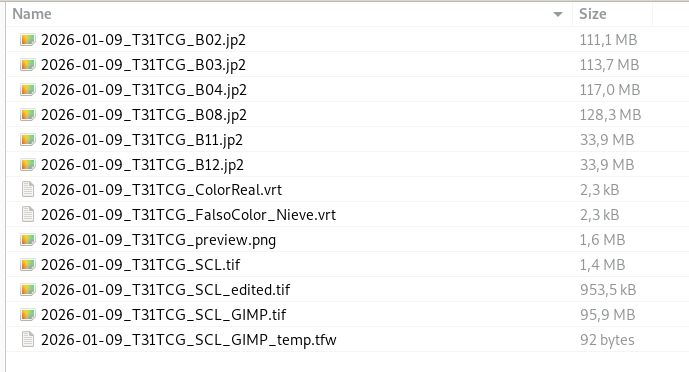
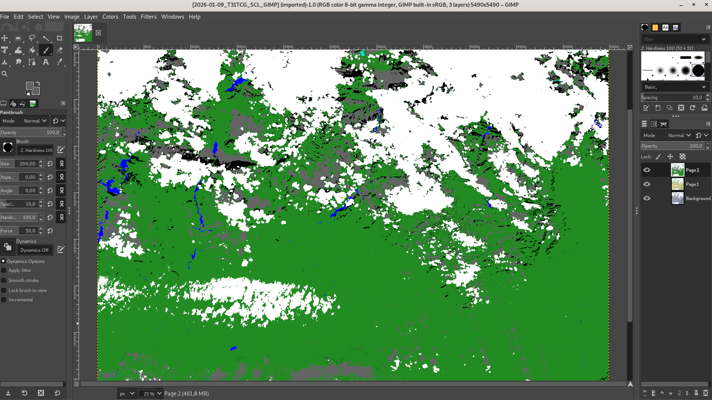
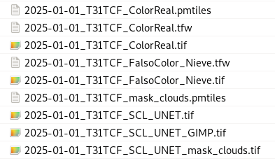
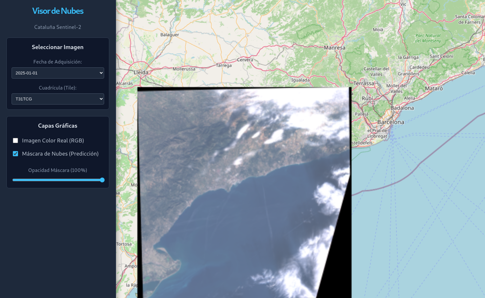

4. Entrega 2: DESARROLLO DEL MARCO TEÓRICO Y METODOLOGÍA (60% del avance)
Trabajo Final de Grado (TFB)
Desarrollar un entorno escalable (pipeline geoespacial) para imágenes Sentinel-2, diseñado para integrar y ejecutar un modelo de Machine Learning
Autor: Antonio López
Fase: Entrega 2 - Metodología y Desarrollo del Proyecto
Fecha: Julio 2026
Resumen con palabras clave
El presente Trabajo Final de Bàtxelor (TFB) aborda una problemática crítica en el procesamiento de imágenes satelitales del programa Copernicus: la clasificación errónea de nubes y nieve por parte del algoritmo estándar Sen2Cor en zonas de alta montaña, la clasificación errónea de sombras de nubes por sombras de montañas y valles, y la detección errónea de zonas inundadas (como el Delta del Ebro) como nubes o ruido. Para solucionar esta deficiencia geométrica y espectral, se ha diseñado e implementado una metodología basada en técnicas de aprendizaje profundo (Deep Learning) utilizando la arquitectura de redes neuronales convolucionales U-Net. El proyecto abarca la concepción completa de un pipeline de datos geoespaciales centrado en la región de Cataluña (España), incluyendo la descarga automatizada de gránulos Sentinel-2, la edición y clasificación manual de máscaras mediante herramientas de edición de imágenes con GIMP y el entrenamiento del modelo. Después de evaluar los errores de un primer entrenamiento inicial con 5 clases, comprobamos que el algoritmo fallaba al detectar el mar, por lo que decidimos rediseñar el modelo añadiendo una sexta clase para aislar por completo las masas de agua. Como línea futura, la arquitectura desacoplada de inferencia se preparará para su despliegue en una infraestructura Serverless de alto rendimiento orientada a producción, utilizando Rust para el procesamiento óptimo de tensores. Los resultados obtenidos demuestran la superioridad de los enfoques basados en redes neuronales frente a heurísticas tradicionales en tareas complejas de Observación de la Tierra.
Palabras clave: Deep Learning, Sentinel-2, Segmentación Semántica, U-Net, Observación de la Tierra, Copernicus.
Abstract
This Bachelor's Final Project (TFB) addresses a critical issue in the processing of satellite imagery from the Copernicus program: the misclassification of clouds and snow by the standard Sen2Cor algorithm in high mountain areas, the misclassification of cloud shadows as mountain and valley shadows, and the erroneous detection of flooded areas (such as the Ebro Delta) as clouds or noise. To solve this geometric and spectral deficiency, a methodology based on Deep Learning techniques has been designed and implemented using the U-Net convolutional neural network architecture. The project encompasses the complete design of a geospatial data pipeline focused on the region of Catalonia (Spain), including the automated download of Sentinel-2 granules, the manual editing and classification of masks using image editing tools with GIMP, and model training. After evaluating the errors of an initial 5-class training run, we observed that the algorithm failed to detect the sea, leading us to redesign the model by adding a sixth class to completely isolate water bodies. As a future line of work, the decoupled inference architecture will be prepared for deployment in a high-performance, production-oriented Serverless infrastructure, utilizing Rust for optimal tensor processing. The results obtained demonstrate the superiority of neural network-based approaches over traditional heuristics in complex Earth Observation tasks.
Keywords: Deep Learning, Sentinel-2, Semantic Segmentation, U-Net, Earth Observation, Copernicus.
Índice interactivo
Glosario de Términos
Para facilitar la lectura a evaluadores y personas no especialistas en Sistemas de Información Geográfica (GIS) se definen los siguientes términos clave utilizados en este documento:
- Sentinel-2: Misión de satélites ópticos de alta resolución (10 metros) perteneciente al programa europeo Copernicus.
- Sen2Cor: Software de la Agencia Espacial Europea (ESA) para la corrección atmosférica (incluye un detector de nubes básico que este proyecto pretende mejorar).
- Tiling: Técnica geoespacial que consiste en "trocear" imágenes satelitales gigantes en cuadrados más pequeños para que el ordenador pueda procesarlos sin saturar la memoria RAM.
- OOM: Out of Memory (Fuera de memoria). Colapso del ordenador por intentar cargar demasiados datos gráficos a la vez.
- COG: Cloud Optimized GeoTIFF. Formato de imagen satelital optimizado para ser consultado y procesado de forma rápida y directa en la nube.
- PMTiles: Formato de archivo de mapa diseñado para almacenar teselas geoespaciales en la nube de forma estática, optimizando la velocidad y coste del servidor.
- gpkg: GeoPackage. Formato de base de datos geoespacial moderno, abierto y compacto.
- shp: Shapefile. Formato de archivo informático vectorial clásico y muy extendido para almacenar sistemas de información geográfica.
- On the fly: Procesamiento o renderizado "sobre la marcha" o en tiempo real. Ocurre en el instante exacto en que el usuario lo solicita, sin necesidad de tener los datos pre-procesados.
- ESA: European Space Agency (Agencia Espacial Europea).
- ACA: Agencia Catalana del Agua.
- ICGC: Instituto Cartográfico y Geológico de Cataluña.
- DEM: Digital Elevation Model (Modelo Digital de Elevaciones). Representación en 3D del relieve terrestre.
- U-Net: Arquitectura de red neuronal convolucional diseñada para la segmentación semántica de imágenes (asignación de clases píxel a píxel).
- Ground Truth: (Verdad Terreno). El patrón oro o mapa de referencia perfecto que se usa para enseñar y examinar a la Inteligencia Artificial. En este proyecto se ha construido y auditado manualmente.
- L1C / L2A: Niveles de procesamiento de imágenes satelitales. L1C es la imagen "cruda" tal cual llega del espacio, y L2A es la imagen tras aplicarle correcciones atmosféricas algorítmicas.
- IoU: (Intersection over Union). Métrica matemática muy estricta utilizada en Inteligencia Artificial para evaluar el porcentaje exacto de acierto espacial al predecir la forma de un objeto.
- Recall: (Exhaustividad). Métrica estadística que mide la capacidad del modelo predictivo para encontrar y señalar todas las nubes reales que existen en la imagen sin dejarse ninguna.
- VRAM: Memoria de acceso aleatorio de vídeo. Es la memoria exclusiva de las tarjetas gráficas (GPUs), la cual se colapsa al cargar imágenes espaciales inmensas si no se emplea el Tiling.
- NDSI: (Normalized Difference Snow Index). Índice matemático adicional que resalta la reflectancia de la nieve frente a las nubes altas basándose en la luz infrarroja.
1. Introducción
El programa Copernicus, de la Agencia Espacial Europea (ESA) y la Unión Europea, representa actualmente uno de los mayores esfuerzos tecnológicos para la observación de la Tierra. Sentinel-2 es uno de los satélites de la constelación Copernicus, que proporciona imágenes multiespectrales de alta resolución. Los datos que estos satélites envían son fundamentales para la observación de la Tierra y su monitoreo gracias a la ingente información de series temporales, que permite el seguimiento de fenómenos globales, como el control de la agricultura de precisión, la prevención de desastres naturales, temperatura diaria, movimientos terrestres, entre otros.
2. Justificación
El procesamiento algorítmico de las imágenes satelitales presenta un desafío técnico de primer nivel. Para la transformación de las imágenes del programa Copernicus, la Agencia Espacial Europea (ESA) emplea el software Sen2Cor para la clasificación de los píxeles de las imágenes (producto Scene Classification o SCL). Este algoritmo estandarizado categoriza cada píxel en una de las siguientes 12 clases oficiales:
- 0: Sin datos (No Data)
- 1: Píxeles saturados o defectuosos
- 2: Áreas oscuras
- 3: Sombras de nubes
- 4: Vegetación
- 5: Suelo desnudo (no vegetado)
- 6: Agua
- 7: Sin clasificar
- 8: Nubes de probabilidad media
- 9: Nubes de alta probabilidad
- 10: Cirros finos
- 11: Nieve o hielo
A pesar de su adopción global y de ser el estándar de la industria, la investigación bibliográfica y la observación empírica han demostrado que Sen2Cor sufre predicciones erróneas cuando se enfrenta a geografías orográficamente complejas y heterogéneas, como es el caso de la región de Cataluña. Al basarse puramente en fórmulas estadísticas tradicionales en lugar de utilizar modelos de aprendizaje automático, Sen2Cor carece de la flexibilidad necesaria para interpretar el contexto espacial de los píxeles. Esto provoca una confusión sistemática entre elementos con firmas espectrales similares (ej. la nieve y las nubes gruesas) o morfologías oscuras (ej. las sombras orográficas frente a las sombras de nubes).
Esta limitación técnica compromete gravemente la integridad de los datos para estudios climáticos, hidrológicos y medioambientales. Frente a esta problemática, la literatura científica reciente evidencia que la aplicación de modelos de aprendizaje automático (Machine Learning) y, muy especialmente, de aprendizaje profundo (Deep Learning), supera de forma holgada a los algoritmos tradicionales. Las redes neuronales convolucionales, al poseer la capacidad de extraer patrones complejos, texturas y el contexto espacial de grandes volúmenes de datos, logran una precisión y robustez inalcanzables para la programación estática. Por consiguiente, se justifica de manera crítica la necesidad de investigar y desarrollar una solución algorítmica alternativa basada en inteligencia artificial que logre subsanar las carencias del procesador estándar europeo, garantizando una segmentación semántica fiable y de alta calidad.
3. Contextualización del trabajo
Para comprender el alcance del problema que aborda este proyecto, es imperativo analizar cómo y dónde falla Sen2Cor en la práctica. Al depender de reglas "If-Then" estáticas y umbrales de luz, en ecosistemas geográficamente ricos como la cordillera de los Pirineos o zonas hidrográficas como el Delta del Ebro, la algoritmia clásica colapsa, dando lugar a tres anomalías de clasificación principales:
- La paradoja de la Nieve: Sen2Cor tiende a confundir de forma sistemática la firma espectral óptica de la nieve de alta montaña con frentes de nubes gruesas.
- La paradoja de las Sombras: El algoritmo es incapaz de discriminar matemáticamente la sombra oscura natural que proyecta una montaña (sombra orográfica) frente a la sombra que proyecta una nube en un valle, provocando cortes abruptos y datos nulos en la cartografía. (Nota: En el planteamiento original de este proyecto se valoró inyectar un Modelo Digital de Elevaciones -DEM- para solventar este problema, pero se desestimó asumiendo que los canales hiperespectrales serían suficientes. Tras culminar el entrenamiento, se ha constatado empíricamente que el modelo sigue sufriendo confusión entre las sombras de las nubes y las sombras del terreno escarpado. En consecuencia, se establece como línea de investigación futura la inyección de modelos topográficos).
- La paradoja del Agua: Las grandes masas de agua profunda que absorben la radiación lumínica son diagnosticadas erróneamente por el procesador de la ESA como sombras densas. Paralelamente, los campos de cultivo que contienen una gran cantidad de agua (como los humedales del Delta del Ebro) son clasificados erróneamente como masas de agua puras y no como terreno agrícola húmedo.
4. Objetivos generales y específicos
4.1. Objetivo general
Desarrollar una herramienta Web GIS escalable (pipeline geoespacial) diseñada para procesar imágenes del satélite Sentinel-2 e integrar modelos de Machine Learning. En este caso de estudio particular, la herramienta implementará y ejecutará un modelo de aprendizaje profundo enfocado en la detección de nubes sobre el territorio de Cataluña (órbitas R008 y R051), superando las limitaciones analíticas del procesador estándar Sen2Cor.
4.2. Objetivos específicos
Para alcanzar este fin global, el proyecto se disgrega en los siguientes hitos operativos medibles:
- Entrenar una arquitectura U-Net: Diseñar y entrenar una red neuronal focalizada en el relieve de Cataluña (a partir de las órbitas R008 y R051 del satélite Sentinel-2) optimizada para la segmentación de píxeles.
- Construir una infraestructura de datos replicable: Desarrollar todo el pipeline metodológico —desde la extracción automatizada de datos L1C en bruto mediante APIs geoespaciales, hasta su edición y clasificación manual— para construir un Ground Truth (Verdad Terreno) que permita a la inteligencia artificial aprender sin los sesgos de la ESA.
- Superar métricamente a Sen2Cor: Resolver las tres paradojas analizadas (aislando eficientemente la nieve, el agua y las nubes) y obtener métricas de evaluación técnica rigurosas (exhaustividad -Recall- e Intersection over Union) superiores al algoritmo oficial.
- Desarrollar la plataforma Web GIS: Construir la infraestructura tecnológica completa (frontend, backend y arquitectura de inferencia). Destaca el diseño de la capa de inferencia utilizando Rust en lugar de Python, lo que permite ejecutar el modelo matemático de forma ultra-rápida y eficiente en entornos web (Serverless), garantizando una visualización interactiva y dinámica de las máscaras sobre la cartografía.
5. Marco teórico y conceptos clave
Para comprender la solución tecnológica propuesta, es necesario asentar brevemente los pilares científicos sobre los que se sustenta la arquitectura del proyecto.
5.1. Datos espaciales: Sentinel-2 y el espectro electromagnético
Sentinel-2 proporciona imágenes multiespectrales, lo que significa que el satélite capta longitudes de onda lumínica más allá de lo que el ojo humano puede ver. Para que el modelo de inteligencia artificial pueda diferenciar correctamente las cubiertas terrestres, no se le alimenta con una foto normal, sino con un tensor de datos compuesto por 7 "capas" o canales simultáneos:
- Espectro visible (Bandas 2, 3 y 4): Azul, verde y rojo. Capturan las texturas físicas, colores naturales y sombras orográficas.
- Infrarrojo Cercano o NIR (Banda 8): Crítico para identificar la vegetación (que rebota el NIR) y los cuerpos de agua (que absorben el NIR y se renderizan oscuros).
- Infrarrojo de Onda Corta o SWIR (Bandas 11 y 12): Fundamental para romper la paradoja de la nieve. Físicamente, la nube refleja el SWIR (brilla), mientras que la nieve lo absorbe fuertemente (se oscurece).
- NDSI (Normalized Difference Snow Index): Un índice matemático pre-calculado que inyecta conocimiento físico explícito sobre el comportamiento de la nieve directamente a la red neuronal.
5.2. Inteligencia Artificial: La Arquitectura U-Net
Frente a la "miopía espacial" de los algoritmos tradicionales que evalúan el terreno píxel a píxel, este proyecto fundamenta su avance técnico en el Aprendizaje Profundo (Deep Learning), concretamente en la Visión por Computadora (Computer Vision). La arquitectura matemática elegida es la U-Net, programada desde cero (From Scratch) utilizando el framework PyTorch (estándar de la industria para el procesamiento de imágenes multiespectrales).
5.2.1. Teoría de Funcionamiento
La U-Net (Ronneberger, Fischer y Brox, 2015) es una Red Neuronal Convolucional (CNN) de última generación diseñada específicamente para la segmentación semántica espacial. Esta red no solo infiere qué elementos hay en una imagen (clasificación), sino que predice exactamente a qué clase pertenece cada píxel individualmente. Su nombre proviene de su característica topología matemática en forma de "U", que consta de tres mecanismos críticos:
- El Encoder (Ruta de Contracción/Bajada): A medida que la imagen satelital avanza por esta ruta, la red aplica filtros matemáticos (convoluciones) y reduce agresivamente el tamaño de la imagen (mediante Max Pooling). En este descenso, la red pierde resolución espacial pero multiplica su profundidad, extrayendo los patrones espectrales de alto nivel. Es decir, el Encoder aprende el "QUÉ" (ej. aprende la firma espectral que diferencia la nieve de la nube).
- El Decoder (Ruta de Expansión/Subida): Es el lado ascendente de la "U". Toma la información abstracta hipercomprimida del fondo de la red y la vuelve a escalar progresivamente hacia arriba (Up-convolutions) hasta recuperar el tamaño original (512x512 píxeles). Su objetivo es proyectar lo aprendido de nuevo en el espacio geográfico. Es decir, el Decoder aprende el "DÓNDE" (las coordenadas físicas del píxel).
- Skip Connections (El Secreto de la Resolución): Si solo usáramos el Encoder y el Decoder, la imagen final saldría extremadamente borrosa tras haber sido tan comprimida. Para solucionarlo, la U-Net lanza "puentes horizontales" que conectan la bajada directamente con la subida. Estos puentes inyectan los bordes y texturas nítidas originales de alta resolución directamente en las capas de reconstrucción, logrando mapear con extrema precisión la frontera milimétrica entre la nieve y el terreno subyacente.
5.2.2. Diseño Arquitectónico y Estructura de Datos (Data Shapes)
- Inferencia (Tratamiento de Entrada y Salida): Al modelo se le inyecta un tensor espacial de 7 canales simultáneos. Tras atravesar la "U", el Decoder expulsa 6 canales paralelos (mapas de probabilidad o logits correspondientes a las 6 Clases Maestras). Una función de activación matemática (
Softmax) evalúa cada píxel a lo largo de esos 6 canales y decide estadísticamente qué clase tiene la probabilidad más alta, colapsando el tensor tridimensional en la imagen 2D final donde cada píxel tiene un valor absoluto del 0 al 5.
- Entradas (Inputs - X): Su forma matricial es
(N, 7, 512, 512). Los tensores están almacenados en disco como Float16 (reduciendo exactamente a la mitad el peso y acelerando la lectura), pero entran en la red obligatoriamente como Float32. Si la IA usara la baja precisión matemática de Float16 durante el aprendizaje activo, no tendría suficientes decimales para guardar los ajustes microscópicos, redondeándolos a cero y colapsando el entrenamiento.
- Salidas (Outputs - Y_pred): Su forma es
(N, 6, 512, 512), representando los logits por Clase Maestra: 0 (Descarte), 1 (Suelo), 2 (Nube), 3 (Sombra Nube), 4 (Nieve), 5 (Agua).
5.2.3. Justificación de la programación "From Scratch" frente a redes pre-entrenadas
A pesar de la popularidad del Transfer Learning (adaptar un modelo ya pre-entrenado por terceros), en este proyecto se tomó la decisión estratégica de programar y entrenar la red U-Net totalmente desde cero (From Scratch). Esta decisión se fundamenta en un análisis crítico de las siguientes incompatibilidades:
- Incompatibilidad de Entradas (Canales y VRAM): Los modelos públicos de Sentinel-2 están rígidamente diseñados para ingerir las 10 o 13 bandas crudas del satélite. Nuestra arquitectura realiza una reducción drástica de dimensionalidad a 7 canales específicos (6 bandas filtradas + el índice NDSI). Descartar bandas irrelevantes previene el colapso de memoria de la tarjeta gráfica (OOM) y acelera el entrenamiento. Modificar la capa de entrada de un modelo pre-entrenado para que acepte 7 canales en lugar de 10 corrompe irreversiblemente sus pesos matemáticos iniciales, anulando la ventaja del Transfer Learning.
- Incompatibilidad de Salidas: Las redes pre-entrenadas genéricas suelen devolver máscaras binarias simplistas (Nube / Despejado). Este proyecto exige mapear una taxonomía semántica de 6 Clases Maestras perfectamente acotada a la geografía catalana. Adaptar un modelo externo requeriría amputar y reconstruir completamente su capa final de predicción, desestabilizando el modelo. Diseñar la topología de salida desde cero garantiza que la red asimile nuestra taxonomía de forma nativa.
- Abundancia de Datos y Sesgo Geográfico: El Transfer Learning es una técnica nacida para paliar la falta de datos. Sin embargo, el monumental esfuerzo de Ingeniería de Datos de este proyecto ha logrado extraer y curar miles de tensores espaciales específicos de Cataluña. Iniciar el entrenamiento en blanco utilizando exclusivamente esta biblioteca de datos locales asegura que el modelo aprenda la física multiespectral pura de nuestro terreno, sin heredar "sesgos geográficos" ajenos a la paradoja topográfica que intentamos resolver.
- Superioridad de las CNN: La literatura científica actual demuestra que las arquitecturas CNN convolucionales superan ampliamente a los algoritmos heurísticos tradicionales en la segmentación de nubes y sombras complejas multisensores, justificando el esfuerzo de diseño "From Scratch" frente a herramientas heredadas.
6. Metodología aplicada
Para la consecución de los objetivos planteados, el desarrollo metodológico de este proyecto se ha estructurado en tres fases estratégicas, diseñadas para romper la dependencia técnica frente al algoritmo defectuoso de la ESA y garantizar el entrenamiento de un modelo de inteligencia artificial sin sesgos.
- Edición y clasificación de la Verdad Terreno (Ground Truth): Ante la evidencia de que las máscaras generadas por Sen2Cor arrastran errores sistemáticos en geografías complejas, se hizo imperativo generar un conjunto de datos limpio. Para ello, se extrajeron los datos en bruto y se aplicó un proceso de edición y clasificación manual de los píxeles conflictivos mediante el software de edición de imágenes GIMP, permitiendo el analisis manual de una manera comoda con herramientas de edición de imagen raster como capas, pinceles y gomas para editar y clasificar a mano las las clasificaciones erróneas basándose en el contexto orográfico real.
- Reducción de dimensionalidad de clases: El estándar europeo divide el terreno en 12 categorías, aportando ruido computacional e ineficiencia. Como pilar metodológico, el pipeline geoespacial desarrollado colapsa matemáticamente esas 12 clases originales en 6 Clases Maestras de alto valor analítico: Descarte, Suelo Útil, Nube, Sombra de Nube, Nieve (objetivo principal) y Masas de Agua.
- Descarte topográfico por eficiencia: En el diseño de la arquitectura de entrada, se decidió priorizar la física espectral frente a los metadatos espaciales. Se prescindió intencionadamente de inyectar un Modelo Digital de Elevaciones (DEM) para aliviar radicalmente la carga de procesamiento del futuro servidor web, demostrando que las leyes térmicas y ópticas de las bandas Infrarrojas de Onda Corta (SWIR) son suficientes por sí solas para separar la nieve de la nube.

Figura 1: Comparativa entre las 12 clases originales de Sen2Cor y la reducción a 6 Clases Maestras optimizadas para la red neuronal.
Justificación Arquitectónica: Descarte temporal del DEM
Durante las fases preliminares de la arquitectura técnica del proyecto, se contempló la posibilidad de incluir un Modelo Digital de Elevaciones (DEM) como canal de entrada adicional a la red neuronal convolucional (U-Net). El propósito inicial era proporcionar a la red un contexto topográfico que le ayudara a discriminar entre nieve (típicamente a altas cotas) y nubes.
Sin embargo, tras una revisión rigurosa del estado del arte y un análisis coste-beneficio en el marco de un Trabajo de Fin de Grado (TFB), se tomó la decisión arquitectónica de desechar el uso del DEM, confiando la discriminación nube-nieve única y exclusivamente a la firma espectral de las bandas físicas.
1. La Física Espectral es suficiente (El poder del SWIR)
La inclusión de un DEM parte de una premisa topográfica (altitud = nieve). Sin embargo, las bandas infrarrojas de onda corta (SWIR: B11 y B12) del satélite Sentinel-2 resuelven este problema mediante las leyes de la termodinámica y la óptica:
- Las nubes reflejan fuertemente la radiación SWIR.
- La nieve, al estar compuesta por cristales de hielo y agua, absorbe masivamente la radiación SWIR, mostrándose muy oscura en estas bandas.
La red neuronal tiene, por tanto, información matemática robusta y directa para separar nieve de nube sin necesidad de recurrir a metadatos de altitud.
Evidencia Bibliográfica
El descarte del DEM está respaldado por los estudios y algoritmos más consolidados en teledetección:
- Zhu & Woodcock (2012) - Fmask: El algoritmo histórico por excelencia para enmascarado de nubes (Fmask) basa su separación nube-nieve en el cálculo del índice NDSI (Normalized Difference Snow Index) usando bandas del verde y del SWIR, prescindiendo totalmente de modelos topográficos.
- Zupanc (2017) - s2cloudless: El algoritmo de Machine Learning oficial utilizado por la Agencia Espacial Europea en su Copernicus Browser (s2cloudless, desarrollado por Synergize) se alimenta exclusiva y estrictamente de 10 bandas espectrales de Sentinel-2. Logra resultados del estado del arte sin inyectar ninguna capa de elevación.
2. Complejidad de Ingeniería de Datos (Data Engineering)
En el contexto de un TFB, incorporar el DEM introduce una complejidad técnica desproporcionada que no garantiza un retorno equivalente en la métrica final de precisión:
- Requiere la descarga independiente de mallas DEM altimétricas (e.g., Institut Cartogràfic i Geològic de Catalunya [ICGC], 2026).
- Exige reproyectar las mallas desde coordenadas geográficas puras al sistema cartográfico UTM específico de cada gránulo de Sentinel-2.
- Precisa un remuestreo espacial avanzado para coregistrar los píxeles del DEM a la cuadrícula estricta de 10m/20m de las bandas L1C.
Conclusión Estratégica:
Aunque descartamos el DEM en este proyecto para centrar el esfuerzo en la física espectral y evitar una sobrecarga innecesaria de preprocesamiento de datos, la evaluación empírica de nuestro modelo nos ha revelado que sí será obligatorio crear un segundo modelo futuro integrando el DEM del ICGC (Institut Cartogràfic i Geològic de Catalunya). Esta evolución arquitectónica será ineludible para solucionar de forma matemática el conflicto óptico de las sombras de las montañas frente a las sombras de las nubes en terrenos escarpados.
Pipeline ETL de clasificación de píxeles (Edición y Clasificación Manual)
A continuación, se detalla el reto técnico y metodológico que supuso permitir la edición visual masiva de máscaras geoespaciales (Scene Classification - SCL) utilizando editores fotográficos tradicionales (como GIMP), garantizando en todo momento la preservación matemática de los datos científicos y su georreferenciación.
Sin este trabajo la edición manual de los ficheros SCL con herramientas de software SIG hubiese sido una tarea imposible, dado que los ficheros SCL son ficheros ráster de una sola banda y los editores gráficos estándar no están preparados para manejar este tipo de ficheros con herramientas de pintura. Por ello, se desarrolló un pipeline ETL para permitir la edición visual masiva de máscaras geoespaciales (Scene Classification - SCL) utilizando editores fotográficos tradicionales (como GIMP), garantizando en todo momento la preservación matemática de los datos científicos y su georreferenciación.
1. El Problema Técnico (Disonancia Radiométrica)
Las máscaras categóricas de la ESA (Sen2Cor) y las predicciones de la U-Net son rásters matemáticos de una sola banda. Sus píxeles no contienen "colores", sino valores enteros (del 0 al 5) que representan las Clases Maestras.
Al intentar auditar manualmente estos archivos en un editor gráfico estándar, surgen dos barreras infranqueables:
- El problema del negro absoluto: Un editor fotográfico interpreta los archivos en una escala lineal de brillo de 8-bits (0 a 255). Un píxel con valor 4 (Nieve) tiene un brillo de apenas el 1.5%. Para el ojo humano, este valor es negro puro. Al abrir la imagen satelital, el analista solo ve un lienzo negro, imposibilitando la edición visual de las nubes o la nieve.
- El peligro de la destrucción radiométrica: Si el analista intenta hacer visible la imagen forzando los niveles de contraste, los valores científicos originales se destruyen irreversiblemente (el valor 4 se estira a 200 para verse gris). Si esa imagen sobrescrita se le pasa a la IA, la red colapsará al no reconocer el valor 200. Adicionalmente, el software gráfico suele amputar y destruir las cabeceras espaciales (coordenadas) al guardar el archivo.
2. Evaluación de alternativas SIG (QGIS)
Antes de decantarnos por un editor de imagenes raster, se estudió en profundidad la viabilidad de utilizar software especializado en Sistemas de Información Geográfica, concretamente QGIS, para realizar la corrección manual de las máscaras. Si bien QGIS maneja de forma nativa la georreferenciación y la radiometría matemática, sus herramientas y plugins de edición resultaron ser excesivamente rígidos y lentos para una tarea que exigía un flujo de trabajo casi "artístico" (pintar a mano alzada bordes de nubes y nieve).
Ante la ineficiencia del entorno SIG para el dibujo fluido, se procesaron las imágenes mediante scripts python para poder editarlas con la extrema comodidad y agilidad de un software de edición de imagenes raster puro como GIMP. No obstante, como futura línea de investigación, seria muy interesante crear desde cero un plugin nativo para QGIS que incorpore herramientas de pintura tipo "pincel digital", unificando así la agilidad fotográfica con el rigor del entorno geoespacial.
3. La Solución: Arquitectura de Codificación y Decodificación (Encode/Decode)
Para evitar utilizar pesadas y lentas herramientas GIS para pintar a mano millones de píxeles, diseñamos e implementamos un Pipeline ETL de clasificación de píxeles basado en el cambio temporal de color:
- Fase de Codificación (Encode): Desarrollamos scripts en Python (
gimp_tools.py) que interceptan la matriz matemática (el gránulo crudo) y la transforman temporalmente en un GeoTIFF RGB de 3 bandas a todo color. A cada valor numérico se le inyecta su color visual (blanco puro para nube, cyan para nieve, etc.).
- Backup Geoespacial: La librería GDAL extrae las coordenadas y las guarda en archivos seguros auxiliares (
.tfw), blindándolas frente a la destrucción del editor fotográfico.
- Fase de Decodificación (Decode): Una vez se realiza la edición y clasificación manual con GIMP , un script python (
003_decode_gimp_edits.py) lee el mapa de colores manipulado, calcula el color de cada píxel hacia la paleta oficial, y re-asigna el valor categórico puro (0-5), reconstruyendo el ráster científico con su georreferencia intacta.
4. Flujo de Trabajo Prácticoº
Gracias a este pipeline de ingeniería de datos, logramos un flujo de trabajo "Human-in-the-Loop" ágil y escalable:
1. El sistema genera los archivos visuales de colores automáticamente durante la descarga de los gránulos.
2. El investigador abre el archivo en GIMP, superpone las imágenes ópticas reales del satélite como guías semitransparentes, y utiliza el lápiz digital (sin antialiasing) para corregir manualmente y con suma facilidad los falsos positivos de Sen2Cor.
3. Mediante consola, se invoca el decodificador, devolviendo el arte visual a un estado matemático puro. Esta salida meticulosamente editada a mano constituye la Verdad Terreno final sobre la que aprende la Inteligencia Artificial.
6.1. Instrumentos
El desarrollo metodológico descrito se ha sustentado en los siguientes instrumentos de software y orígenes de datos:
- Fuente de observación de la Tierra: Satélite Sentinel-2 (programa Copernicus de la ESA). Se han empleado tanto los datos radiométricos en bruto (Nivel L1C) como las máscaras preexistentes del procesador oficial (Sen2Cor) a modo de base comparativa.
- Ingeniería de datos (Pipeline ETL): Lenguaje Python, utilizado para desarrollar los scripts de descarga automatizada, recorte de imágenes (tiling) y transformación bidireccional.
- Edición y clasificación visual: Software libre de edición de imágenes GIMP, empleado como instrumento principal para la reclasificación manual de los píxeles conflictivos.
- Modelado de Inteligencia Artificial: Framework PyTorch, estándar de la industria para el entrenamiento matemático de la arquitectura U-Net.
- Arquitectura de despliegue web: Lenguaje Rust, seleccionado por su extrema velocidad y eficiencia de memoria para compilar el modelo y ejecutar la inferencia en entornos Serverless.
6.2. Materiales (Conjunto de datos)
El material base sobre el que se fundamenta este Trabajo Final de Bàtxelor está compuesto por imágenes satelitales multiespectrales de Sentinel-2 (producto de reflectancia L1C) pertenecientes a las órbitas relativas R008 y R051, que cubren la totalidad del territorio de Cataluña.
Con el objetivo de maximizar la solidez del modelo ante casos geográficamente complejos (Hard Negatives), se ha diseñado un conjunto de datos (Dataset) compuesto por 40 gránulos o escenas específicas, divididas en dos grandes bloques:
- Conjunto de Entrenamiento y Validación (30 gránulos): Seleccionados estratégicamente para enseñar a la red neuronal a resolver las principales paradojas orográficas de Cataluña:
- Alta Montaña (Pirineos): Gránulos de invierno (T31TCH, T31TDH) con nieve pura en valles y nubes bajas.
- Niebla Inversión Térmica: Gránulos de invierno sobre la llanura de Lleida (T31TCG, T31TDG).
- Costas y Urbano: Escenas sobre Barcelona y el mar Mediterráneo (T31TDF) para resolver la detección de bruma costera y evitar falsos positivos por naves industriales muy brillantes.
- Superficies Hídricas: Gránulos sobre el Delta del Ebro (T31TCE, T31TCF) para evitar la confusión matemática entre el agua de los arrozales y las sombras oscuras de las nubes.
- Conjunto de Test Ciego o Blind Test (10 gránulos): Un bloque de validación aislado que la IA nunca observará durante la fase de entrenamiento. Consta de 10 imágenes con condiciones atmosféricas severas (ej. nieve densa cruzada por nubes en febrero, tormentas estivales en agosto sobre el mar) que servirán para evaluar el rendimiento empírico del modelo frente a Sen2Cor al final del proyecto.
6.3. Recursos e infraestructura
Para posibilitar el ciclo de vida completo del modelo (descarga, preprocesamiento, entrenamiento masivo e inferencia), el proyecto ha requerido una infraestructura técnica apoyada en los siguientes recursos:
- APIs de Datos (Copernicus Data Space Ecosystem - CDSE): Sistema cloud oficial de la Agencia Espacial Europea. Se ha empleado el protocolo OData/OpenSearch para automatizar la consulta perimetral, filtrado por porcentaje de nubes y posterior descarga masiva de los gránulos satelitales en formato comprimido.
- Aceleración Hardware (GPUs / CUDA): El entrenamiento de la arquitectura U-Net exige cálculos matriciales pesados (retropropagación de miles de millones de operaciones matemáticas por segundo). Se ha empleado aceleración por hardware dedicada mediante tarjetas gráficas compatibles con el ecosistema CUDA (Nvidia), posibilitando iterar sobre el conjunto de entrenamiento en tiempos logísticos viables.
- Almacenamiento masivo intermedio: Debido a la transformación matemática de los gránulos (10,000 x 10,000 píxeles) a matrices tensoriales Float32 subdivididas en recortes de 512x512 píxeles, la creación del conjunto de datos temporal (tiling) ha requerido sistemas de almacenamiento sólidos capaces de alojar grandes volúmenes de arreglos NumPy (
.npy) sin cuellos de botella de lectura durante las épocas de entrenamiento.
6.4. Metodología de evaluación
Para certificar empíricamente que el modelo propio supera al estándar europeo, la fase de evaluación técnica se diseñó bajo una regla científica inquebrantable: Bajo ningún concepto se evalúa el rendimiento estadístico de la IA contra las máscaras originales de Sen2Cor en el conjunto de Test.
Dado que la premisa del proyecto asume que el algoritmo tradicional comete falsos positivos sistemáticos, utilizar su salida como "verdad absoluta" generaría una paradoja estadística donde el sistema informático penalizaría a la U-Net precisamente en los casos en los que acierta corrigiendo los errores de la ESA. Por ello, el flujo de evaluación establecido es el siguiente:
- Frontera de Aislamiento (Blind Test): Se utilizan los 10 gránulos de condiciones atmosféricas extremas reservados exclusivamente para evaluación.
- Edición Perfeccionista: Se aplica una edición y clasificación manual exhaustiva sobre todos y cada uno de los píxeles conflictivos de esos 10 gránulos (apoyado en herramientas SIG), generando una Verdad Terreno validada objetivamente por el humano.
- Cálculo de Métricas Científicas: Las predicciones emitidas por la red neuronal se enfrentan exclusivamente a esta nueva Verdad Terreno perfecta. Para cuantificar la precisión espacial y la robustez analítica del modelo, se definieron como indicadores de éxito las métricas estándar de la industria en segmentación semántica de imágenes:
- Intersection over Union (IoU): Para medir la superposición geométrica exacta entre la nube/nieve predicha por el modelo y la nube/nieve real.
- F1-Score: Media armónica entre la precisión y la exhaustividad (Recall), vital para evitar métricas engañosas en clases desbalanceadas geográficamente (como la nieve).
- Precisión global (Accuracy).
La comparativa final de estas métricas entre las predicciones del modelo U-Net y las máscaras generadas por el algoritmo oficial Sen2Cor permitirá demostrar, de forma cuantitativa, el salto de precisión logrado frente al estándar de la ESA.
7. Desarrollo viable y sostenible
En la era del Big Data, el desarrollo de proyectos tecnológicos masivos exige un compromiso íntegro con la sostenibilidad. Este caso de estudio ha sido orquestado bajo tres perspectivas fundamentales de viabilidad y ética: ambiental, social y económica.
7.1. Temporalización e hitos
La complejidad de orquestar un pipeline geoespacial masivo interconectado con modelado predictivo exige un control de tareas meticuloso. Atendiendo al calendario del TFB, a continuación se detallan las fases alcanzadas y planificadas:
Fases de Ejecución (Desarrollo End-to-End):
Este proyecto trasciende el mero análisis estadístico aislado para constituirse como una solución tecnológica integral (End-to-End). El ciclo de vida de la herramienta abarca desde la idea inicial, la investigación de los requisitos de la Agencia Espacial Europea (ESA) para el acceso a datos de satélite, la adquisición cruda de la información espacial, la preparación y limpieza de datos, el entrenamiento del modelo, la evaluación científica y la puesta en producción, edición manual ETL con software de imagen, flujos ETL automatizados para extracción de gránulos vía API, edición manual con software de imagen hasta la puesta en producción de una herramienta web fusionando Ingeniería de Datos (Data Engineering), Machine Learning y DevOps/Web Development.
- Fase 1 - Fundamentación e Ingeniería de Datos (Completada): Conceptualización del problema analítico, evaluación teórica de los sensores de la ESA, viabilidad técnica de los datos y primer planteamiento arquitectónico.
- Fase 2 - Arquitectura MLOps y Modelado (Actual - 60%): Programación y automatización del flujo de datos ETL masivo para extracción de gránulos vía API. Diseño y colapso de la matriz de características. Refinamiento e investigación del concepto Ground Truth Humano. Entrenamiento algorítmico de la red neuronal convolucional (U-Net) y justificación estadística de la pérdida paramétrica. Para garantizar la reproducibilidad científica y técnica, todo el código fuente de esta orquestación se encuentra versionado en un repositorio público de GitHub, estando cada script rigurosamente documentado mediante Docstrings bajo estándares de ingeniería de software profesional.
- Fase 3 - Inferencia Cloud y Validaciones (Próxima): Ejecución algorítmica sobre un set de Test puro y sin contaminar para su validación científica frente al algoritmo nativo Sen2Cor. Paralelamente, se iniciará el proceso de desacople del modelo para preparar su despliegue en infraestructuras Cloud.
- Fase 4 - Despliegue Web y Defensas (Definitiva): Cierre del ciclo tecnológico mediante el desarrollo de una Aplicación Web que servirá el modelo entrenado, permitiendo inferencias on-the-fly a nivel de usuario. Culminará con el empaquetado del trabajo escrito y la creación de las defensas argumentativas interactivas.

Figura 2: Diagrama de Gantt ilustrando el cronograma general del proyecto.
7.2. Alineación con los ODS y Códigos UNESCO
El rigor académico y técnico de este Trabajo Final de Bàtxelor se enmarca dentro de las clasificaciones científicas internacionales y persigue un impacto directo en la sostenibilidad global.
Códigos UNESCO
La naturaleza de la investigación se clasifica bajo los siguientes códigos nomencladores:
- 1207.94 (Aprendizaje automático): Justificado por el entrenamiento de un modelo de Deep Learning (Redes Neuronales U-Net) para la segmentación semántica de imágenes satelitales.
- 1203.93 (Cloud Computing): Aplicado en el diseño y despliegue del entorno escalable (pipeline geoespacial) y la futura infraestructura de procesamiento online.
- 1203.96 (Bases de Datos): Requerido para la orquestación y estructuración de la arquitectura orientada a la nube mediante formatos geoespaciales optimizados (Cloud Optimized GeoTIFF y PMTiles).
Objetivos de Desarrollo Sostenible (ODS)
El impacto del análisis geográfico desarrollado está firmemente cimentado sobre el marco de los Objetivos de Desarrollo Sostenible de las Naciones Unidas:
- ODS 9 (Industria, Innovación e Infraestructura): El proyecto construye una infraestructura tecnológica geoespacial innovadora que mejora sustancialmente las capacidades de procesamiento y análisis de datos de la industria satelital europea.
- ODS 13 (Acción por el clima): La monitorización precisa de la superficie terrestre (diferenciando de forma empírica y fiable la nieve de la nubosidad) proporciona datos limpios y veraces, fundamentales para evaluar el impacto del cambio climático y facilitar la gestión estratégica de los recursos hídricos en el territorio de Cataluña.
7.3. Condicionantes ambientales, sociales y económicos
Condicionantes Ambientales (Green Computing)
El proceso de entrenamiento de grandes redes neuronales exige ciclos masivos de cómputo gráfico (GPU), los cuales requieren un gasto de energía eléctrica considerable y, por ende, generan una huella de carbono subyacente. Para transformar este proyecto en un desarrollo sostenible medioambientalmente:
- Se ha diseñado una técnica algorítmica denominada Tiling, que fragmenta las imágenes satelitales y somete a evaluación matemática la riqueza de datos de cada cuadrante. Si un área geográfica contiene predominantemente datos nulos (ej. océano negro o franjas vacías), el parche no se procesa ni se envía a la tarjeta gráfica. Esta optimización algorítmica reduce el gasto energético del hardware drásticamente.
- A nivel aplicativo, el modelo resultante facilitará a organismos como la Agencia Catalana del Agua (ACA) una herramienta computacional robusta para monitorizar el deshielo pirenaico y las cuencas fluviales, actuando como un escudo tecnológico en la prevención y gestión eficiente de la sequía. Asimismo, resultará de valor para el Institut Cartogràfic i Geològic de Catalunya (ICGC), al permitir la generación automática de mosaicos territoriales ortofotográficos completamente limpios de nubosidad. Por extensión, esta tecnología democratiza el acceso a máscaras espaciales de alta fidelidad para cualquier universidad, institución o empresa privada que requiera imágenes nítidas para realizar estudios sobre el terreno, monitorización de masas forestales, control de plantaciones agrícolas o detección de construcciones ilegales. Además, su arquitectura altamente escalable permite la futura integración de nuevas constelaciones satelitales (como los datos de temperatura superficial de Sentinel-3 y los datos de radar SAR de Sentinel-1). Esta fusión multisensor posibilitará calcular el volumen y la estabilidad térmica de las masas de nieve en los Pirineos para predecir el riesgo de aludes, así como detectar corrimientos y movimientos de tierra con precisión milimétrica.
Condicionantes Sociales y Replicabilidad Científica (Open Source)
Los mapas satelitales defectuosos generan decisiones tardías y perjudiciales. Al proporcionar a los profesionales del territorio (ej. agricultores del Delta del Ebro o responsables de parques naturales) máscaras geoespaciales infalibles y sin errores, se promueve un ecosistema de información civil libre de sesgos y de altísima calidad. La democratización de estos datos empíricos habilita respuestas gubernamentales mucho más ágiles en momentos críticos como sequías, inundaciones o grandes incendios forestales.
Bajo la premisa innegociable de la Replicabilidad Científica, tanto los datos satelitales de la ESA como la totalidad de la arquitectura de código subyacente de este proyecto son de dominio público y código abierto (Open Source). El pipeline completo de ingeniería se encuentra alojado y versionado en el repositorio de GitHub. Para asegurar que la investigación académica pueda ser auditada, heredada y ejecutada por cualquier entidad científica del mundo, todo el ecosistema de scripts (desde la extracción en red OData hasta el orquestador de inferencia PyTorch) ha sido programado de forma modular y está exhaustivamente documentado internamente mediante Docstrings técnicos. Esto permite que cualquier usuario o investigador, con independencia de su presupuesto informático, pueda clonar el repositorio, comprender línea a línea el flujo de tensores, reproducir exactamente los mismos modelos matemáticos y utilizar este trabajo como núcleo tecnológico para desplegar nuevos sistemas GIS a escala global.
Condicionantes Económicos
Para garantizar que la metodología pueda ser heredada sin restricciones financieras, toda la orquestación del proyecto huye del software propietario:
- Se ha empleado íntegramente código abierto (lenguajes Python y Rust, junto al framework PyTorch).
- Para el crítico proceso de edición y clasificación manual de píxeles (forja del Ground Truth), se ha utilizado GIMP, una alternativa libre y gratuita que democratiza el acceso a la edición cartográfica de alto nivel.
- Las fuentes de datos provienen del catálogo abierto de la Unión Europea a través de la API OData de Copernicus.
- A largo plazo, el despliegue del software mediante estándares geoespaciales modernos permite operar en un entorno web Serverless de ínfimo coste en la nube, eliminando la dependencia de servidores dedicados costosos.
8. Proceso y resultados
Este complejo apartado detalla la ejecución técnica integral del pipeline geoespacial. Antes de desglosar las entrañas del código y las métricas, es fundamental entender el flujo narrativo del desarrollo.
Cronología de Decisiones Críticas y Puntos de Inflexión (Pivotes Arquitectónicos)
El desarrollo de todo el proyecto no fue lineal, sino un proceso puramente iterativo y empírico. Para gestionar la extrema complejidad del proyecto, se adoptaron los estándares actuales de la industria tecnológica basados en metodologías de desarrollo ágil (alineadas con el marco de trabajo Scrum). Trabajar bajo esta estricta filosofía permitió abandonar el rígido modelo de diseño tradicional a favor de un enfoque altamente adaptativo: probar iterativamente, detectar fallos rápido y corregir de inmediato. A lo largo del ciclo de vida del software, la investigación colisionó con severas barreras físicas y matemáticas que exigieron paradas de emergencia, iteraciones continuas de evaluación (sprints analíticos) y cambios estratégicos drásticos de rumbo (pivotes arquitectónicos):
- Paso 1. El Choque con el Estándar (Sen2Cor): Comenzamos la investigación asumiendo la validez de la máscara oficial de la ESA. Sin embargo, al auditar visualmente el relieve de los Pirineos nevados, descubrimos el error catastrófico del algoritmo, que era incapaz de separar la nieve del hielo y de la nube. Decisión: Paramos la investigación pasiva y decidimos construir desde cero (From Scratch) nuestra propia Red Neuronal U-Net inyectándole el índice físico NDSI.
- Paso 2. El Dilema Topográfico (Descarte del DEM): Para solucionar el solapamiento entre las sombras de las montañas y las sombras de las nubes, la arquitectura inicial contempló inyectar el Modelo de Elevaciones (DEM) de Cataluña. Decisión: Tras un arduo análisis de coste y beneficio, frenamos su integración para apostar ciegamente por la pura termodinámica espectral (bandas SWIR). Aunque asumíamos un rendimiento más moderado en las sombras, logramos un procesamiento ultrarrápido y ecológico (Green Computing).
- Paso 3. La Rebelión del Agua (El Sun Glint): Durante las primeras épocas de entrenamiento con 5 clases, las inferencias sobre el Mediterráneo y los arrozales del Delta del Ebro colapsaron. El sol, al reflejarse especularmente en el mar (Sun Glint), cegaba a la red neuronal, haciéndole predecir inmensos bancos de nubes inexistentes. Decisión: Frenamos la fase de modelado de inmediato, retrocedimos a la etapa de Ingeniería de Datos y rediseñamos el espacio latente matemático, creando forzosamente una 6ª Clase exclusiva para las Masas de Agua.
- Paso 4. El Límite Computacional y el Salto al Vacío (Rust): Una vez logrado el modelo perfecto (alcanzando el 99.99% de IoU en la detección de nieve), las simulaciones de inferencia masiva en el servidor web colapsaron la memoria RAM generada por el lenguaje Python. Decisión: Asumir el reto formativo definitivo y pivotar la arquitectura de producción de despliegue hacia un ecosistema de microservicios Serverless programado asíncronamente en lenguaje Rust.
A continuación, se documenta técnicamente cómo se ejecutó y superó cada una de estas fases.
8.1. Fuentes de datos y recopilación (Ingeniería de Ingesta)
La materia prima de este proyecto procede del programa Copernicus de la Agencia Espacial Europea (ESA), específicamente de la constelación Sentinel-2. Dado el masivo volumen de información requerido para entrenar redes neuronales profundas (terabytes de datos), la descarga manual a través de interfaces gráficas o portales web resultaba logísticamente inviable, forzando el diseño arquitectónico de un módulo automatizado de extracción masiva (Pipeline ETL).
El problema topológico: API STAC vs API OData
Durante la fase de diseño de la orquestación de datos, la Agencia Espacial Europea transicionó su histórico portal SciHub hacia el nuevo ecosistema Copernicus Data Space Ecosystem (CDSE). Se investigaron en profundidad dos protocolos analíticos de acceso a la infraestructura europea:
- API STAC (SpatioTemporal Asset Catalog): Aunque es el estándar actual más ágil para búsquedas espaciales, presentaba un bloqueo técnico insalvable para nuestro caso de uso. STAC requiere que la geometría de la búsqueda espacial intersecte obligatoriamente con el polígono dinámico de captura del satélite. Dado que el catálogo europeo indexa mediante polígonos irregulares que sufren distorsiones en los bordes orbitales, esto provocaba que una simple petición STAC para el Pirineo devolviera en ocasiones gránulos fragmentados o capturas topológicamente incompletas.
- API OData (Open Data Protocol): Al ser un protocolo de consulta de nivel más bajo, nos permitió interrogar directamente la base de datos relacional de la ESA filtrando explícitamente por el código alfanumérico exacto de la baldosa geográfica (Tile ID, ej. T31TCH) ignorando de facto las colisiones poligonales defectuosas del catálogo.
Para asegurar un flujo ininterrumpido y matemáticamente perfecto de escenas cuadradas completas de 10980x10980 píxeles, se tomó la decisión estructural de programar el orquestador utilizando la persistencia rígida de la API OData.
A través del script sentinel_downloader.py, el sistema lee los listados de metadatos curados y ejecuta de forma iterativa y autónoma:
1. Petición criptográfica y refresco continuo de tokens de acceso temporales (OAuth 2.0) a la infraestructura europea, sorteando los cortafuegos y cuellos de botella de seguridad institucionales.
2. Búsqueda perimetral algorítmica y orquestación de colas de descarga asíncronas para exprimir al máximo el ancho de banda del canal de red.
3. Descarga exclusiva y quirúrgica de las bandas físicas del producto crudo L1C (Visible, Infrarrojo Cercano y SWIR puro, sin los sesgos de la corrección atmosférica oficial) y extracción paralela de la máscara SCL del producto L2A, la cual será utilizada como el borrador fundacional para esculpir manualmente nuestra Verdad Terreno.
8.2. Exploración y preparación
Una vez descargados los gránulos crudos (archivos .jp2), se transforman en estructuras matemáticas legibles por la red neuronal. A través del script 004_create_dataset.py, se orquesta un proceso automático de ingeniería de datos y preparación espacial:
- Alineación espacial (Coregistro): Sentinel-2 captura bandas a diferentes resoluciones nativas. El algoritmo lee la banda B02 a 10 metros de resolución y utiliza interpolación bilineal para remuestrear las bandas Infrarrojas de Onda Corta (SWIR, nativas a 20m) a esa misma resolución de 10m. Esto garantiza que todos los píxeles del tensor final estén perfectamente superpuestos espacialmente sin pérdida de continuidad.
- Ingeniería de Características (Feature Engineering): Se calcula matemáticamente el Índice NDSI (Normalized Difference Snow Index) operando matricialmente la banda Verde (B03) y la primera banda SWIR (B11). Este resultado se apila como una séptima banda adicional en el cubo de datos, inyectando conocimiento físico explícito sobre la nieve en la red neuronal.
- Mosaico y purgado (Tiling y Void Filtering): La imagen de satélite original roza los 10000x10000 píxeles, un volumen inasumible para la memoria de cualquier tarjeta gráfica comercial (Out of Memory). El sistema trocea la imagen dinámicamente en miles de parches o recortes de 512x512 píxeles. Durante este proceso, se evalúa estadísticamente el contenido de cada recorte: si más del 90% del área contiene datos nulos o de descarte (mar profundo), el parche se purga y no se exporta a disco duro, agilizando de forma superlativa los tiempos de entrenamiento posteriores.
Reducción de Dimensionalidad (Colapso a 6 Clases Maestras)
Entrenar una red neuronal para discernir entre las 12 clases oficiales de la ESA resultaría en un modelo ineficiente, con un espacio latente matemáticamente sobredimensionado y tiempos de convergencia lentísimos. Mediante una profunda revisión analítica, se diseñó un proceso de colapso físico que agrupa las firmas espectrales lógicas en 6 Clases Maestras:
- Clase 0 (Descarte): Píxeles ciegos del sensor o bordes geográficos sin datos. Durante el modelado, la red neuronal anulará activamente cualquier función de pérdida sobre estas áreas matemáticas (ignore_index=0), ahorrando millones de ciclos inútiles de cálculo y purificando la generalización.
- Clase 1 (Suelo): Toda superficie reflectante base como tierra, roca, asfalto y clorofila vegetal.
- Clase 2 (Nube): Simplificación drástica agrupando nubes densas y cirros de alta altitud, dado que ambos suponen objetivamente una "obstrucción atmosférica".
- Clase 3 (Sombra Nube): Oscurecimiento proyectado sobre el terreno.
- Clase 4 (Nieve): Superficies congeladas puras (Nuestro Objetivo de Control primordial).
- Clase 5 (Masas de Agua): Mar abierto, lagos y deltas.
Prevención de la "Disonancia Cognitiva" Analítica
En una aproximación naive, podría parecer lógico fusionar la "Sombra de nube" con la propia "Nube", ya que ambas conforman el "ruido meteorológico" a eliminar de los mapas finales. Sin embargo, en el crudo paradigma del Machine Learning, esto supone un antipatrón arquitectónico letal.
Una nube física refleja intensamente la radiación (el satélite capta valores altísimos, píxeles fotométricamente radiantes y blancos), mientras que una sombra absorbe casi toda la luz solar (valores espectrales ínfimos, píxeles negros). Si forzamos a la matriz de pesos convolucionales de la U-Net a agrupar un extremo blanco absoluto con un extremo negro puro bajo un mismo identificador lógico matemático (ej. Clase 2 conjunta), la red sufriría una gravísima disonancia cognitiva. Al no hallar fronteras de hiperplano viables para separar y clasificar ambas naturalezas lumínicas al mismo tiempo, los gradientes de aprendizaje colapsarían. Por ello, la segregación innegociable de estas firmas espectrales opuestas en dos clases distintas (Clase 2 y Clase 3) fue un hito de diseño imperativo y no negociable para lograr la convergencia exitosa del modelo de Inteligencia Artificial.
8.3. Análisis exploratorio
Previo a la fase intensiva de modelado, se llevó a cabo un análisis visual y estadístico de los parches generados. Al prescindir de un Modelo Digital de Elevaciones (DEM), la exploración se centró puramente en la respuesta espectral física de las bandas.
Esta fase exploratoria fue crucial para diagnosticar empíricamente el comportamiento de los casos geográficos más complejos (Hard Negatives):
1. Sombras orográficas y humedad extrema: Se observó visualmente que las grandes sombras proyectadas por el relieve montañoso de los Pirineos, así como las zonas terrestres con saturación de humedad, generaban confusión espectral y propiciaban falsos positivos en la clasificación original.
2. Clasificación errónea de sombras nubosas: Se detectó de forma repetida que el algoritmo oficial de la ESA catalogaba las sombras proyectadas por formaciones nubosas densas directamente como "No Data" (ausencia de información), lo cual corrompía severamente la continuidad espacial de la imagen.
3. Auditoría humana: Para evitar sesgar a la red neuronal con los errores nativos de la Agencia Espacial Europea, se empleó el editor de imágenes Open Source GIMP como herramienta de análisis exploratorio. A través del script 003_decode_gimp_edits.py, el analista inspeccionó los canales espaciales y editó manualmente los píxeles erróneos de Sen2Cor, aislando el ruido algorítmico y forjando una Verdad Terreno (Ground Truth) de alta fidelidad.
4. Anomalías Agrícolas (El Delta del Ebro): Un hallazgo empírico crítico durante la fase de curación fue la detección masiva de píxeles "negros" y "azules" (clasificados como mar profundo) en el interior continental de la desembocadura del Delta del Ebro. Estas anomalías correspondían a la campaña de siembra de los arrozales: capas de agua dulce extremadamente someras mezcladas con brotes de vegetación verde que confundían por completo el árbol de decisiones de Sen2Cor. Al interceptar visualmente estos recortes espaciales, se aislaron estas parcelas geométricas y se reclasificaron manualmente con el pincel digital hacia su verdadera categoría física. Este colosal esfuerzo evitó que la red neuronal heredase un sesgo crónico de la ESA al sobrevolar e inferir zonas agrícolas masivamente inundadas.
5. Casos Extremos (El efecto confeti): En situaciones atmosféricas límite (Hard Negatives), como la presencia de cirros de hielo sumamente finos sobrevolando los altos picos nevados de los Pirineos, el algoritmo europeo entra en colapso generando un agudo "ruido de confeti", clasificando píxeles aleatorios de forma errática y altamente fragmentada. En estos escenarios críticos, la mecánica de edición visual demostró ser verdaderamente salvadora: a nivel operativo resultó mucho más eficiente borrar la máscara oficial completa y redibujar a mano alzada el contorno real de la masa nubosa, garantizando una topología limpia y coherente para la red neuronal algorítmica.
8.4. Gestión y almacenamiento
Tras el preprocesamiento, el masivo volumen de datos generado supone un reto logístico de almacenamiento y lectura. La transformación de los 40 gránulos satelitales en recortes de 512x512 píxeles origina decenas de miles de archivos matriciales independientes. Su gestión técnica se ha resuelto bajo dos paradigmas:
- Almacenamiento físico estructurado: Los recortes que superan el filtro de descarte se almacenan en una unidad de estado sólido (SSD) en formato binario puro
.npy (estándar de la librería NumPy para máxima velocidad de I/O). Se organizan jerárquicamente en el directorio dataset/patches/train/<id_granule>/.
- Gestión de memoria dinámica (Lazy Loading): Para evitar el colapso absoluto de la memoria RAM del sistema (Out of Memory), la clase programada en el script
dataset.py actúa como orquestador entre el disco duro y la tarjeta gráfica. Durante el modelado, este componente no carga el dataset entero de golpe; escanea los directorios y transfiere pequeños lotes de parches a la memoria VRAM estrictamente bajo demanda, vaciándola inmediatamente después de su procesamiento matemático.
Optimización Binaria y Prevención del Colapso Aritmético (Float16 vs Float32)
Un reto silente pero demoledor en el campo del Deep Learning espacial es la gestión del volumen físico en disco frente a la exigencia de alta precisión en el cálculo neuronal matricial. Para resolver esta grave fricción, se diseñó e implementó una estrategia asimétrica de tipado de datos (Data Typing):
- Almacenamiento Estático Constreñido (Float16): Todos los recortes satelitales procesados se exportan a los discos de estado sólido (SSD) serializados numéricamente bajo media precisión de coma flotante (Float16). Esta drástica reducción arquitectónica divide exactamente a la mitad el peso masivo del dataset bruto (ahorrando terabytes de almacenamiento) y acelera exponencialmente las altísimas velocidades de transferencia (I/O) durante las épocas de entrenamiento.
- Inferencia en Memoria Volátil (Float32): Sin embargo, cuando el tensor cruza el bus de datos hacia el núcleo de la tarjeta gráfica y la red neuronal convolucional comienza a ajustar sus millones de pesos mediante derivadas parciales microscópicas, mantener el uso de media precisión provocaría un desbordamiento inferior aritmético catastrófico (Underflow). El procesador CUDA no tendría suficientes decimales lógicos para almacenar diferenciales tan ínfimos, redondeando matemáticamente el gradiente del error a cero y colapsando el aprendizaje de forma irreversible. Por ello, el cargador de datos inyecta dinámicamente un operador escalar subyacente que "infla" y recompone la matriz dentro de la memoria volátil VRAM devolviéndola a precisión matemática completa (Float32), protegiendo de esta forma la topología fractal del modelo sin castigar el almacenamiento permanente de la máquina.
8.5. Modelado
El núcleo analítico de la investigación recae en el diseño y entrenamiento de una red neuronal convolucional profunda. Para esta exigente tarea de segmentación semántica (clasificación matemática inferencial píxel a píxel), se ha implementado la reconocida arquitectura U-Net utilizando el robusto framework PyTorch (definida explícitamente en el script de modelado matricial model.py).
Justificación Científica del Enfoque Arquitectónico
Durante la fase de diseño matemático de la Inteligencia Artificial, se evaluaron diversas aproximaciones empleadas en la literatura científica para la teledetección de nubes. Finalmente, se adoptó por unanimidad técnica un modelo unificado Single-Date (una única red neuronal omnisciente para toda la orografía de Cataluña que realiza sus predicciones analizando un único instante temporal estático, sin necesitar en absoluto el registro histórico de los días o semanas anteriores) frente a otras alternativas lógicas que fueron categóricamente desestimadas:
- Hipótesis Descartada 1 (Sobreajuste Espacial / Spatial Overfitting): Podría haberse planteado el entrenamiento de un modelo "experto" y aislado exclusivamente para el gránulo de los Pirineos y otro distinto para el litoral plano de Barcelona. Sin embargo, en el campo del Deep Learning, las redes neuronales tienden insidiosamente a memorizar el fondo estático (ciudades, valles, carreteras) en lugar de aprender verdaderamente la intrincada física termodinámica de las nubes. Si el modelo memoriza fotográficamente el paisaje subyacente, fallará de forma catastrófica ante un simple cambio de uso del suelo (ej. la construcción de una nueva autovía) o ante una severa nevada fuera de temporada temporal. La literatura científica de vanguardia demuestra fehacientemente que una red convolucional debe nutrirse de parches e imágenes globalmente distribuidas para obligarla a desarrollar Invarianza Espacial.
- Hipótesis Descartada 2 (Deriva del Concepto y Detección de Anomalías): Otra aproximación intelectualmente intuitiva es el análisis multi-temporal: alimentar al algoritmo con una imagen ideal "100% despejada" del territorio y enseñarle a clasificar como "nube" cualquier alteración lumínica posterior. El problema físico letal de este enfoque es la Deriva del Concepto (Concept Drift). La superficie del planeta Tierra muta a diario: una llanura verde intensa en primavera amarillea y se seca en verano, la cota de nieve bascula en invierno, y un río se desborda y se ensancha espectacularmente en otoño. Un modelo anclado en la detección de anomalías clasificaría ciegamente todos estos cambios naturales estacionales como nubes, generando tasas masivas e inaceptables de falsos positivos y requiriendo un colosal gasto energético computacional, al depender perpetuamente del arrastre en memoria de historiales masivos de imágenes previas.
La estrategia Single-Date elegida asume de forma proactiva el dificilísimo reto analítico de forzar a la U-Net a aprender genuinamente la firma espectral física de la nube y la nieve, sin permitirle utilizar atajos o trampas geográficas. Al lograrlo, se garantiza una inferencia matemática ágil, veloz y extraordinariamente ligera, perfecta para ser desplegada en entornos de producción Cloud.
El paradigma del "Transfer Learning" frente a la Programación "From Scratch"
Otra de las decisiones arquitectónicas más trascendentales debatidas durante la fundamentación teórica del modelado fue declinar formalmente el uso de modelos de Deep Learning pre-entrenados públicos (como los vastamente ofrecidos por repositorios genéricos) para optar por programar y entrenar la red neuronal desde el absoluto cero matemático (From Scratch). Esta ruptura técnica se fundamentó en tres incompatibilidades estructurales insalvables para el rigor científico de nuestro caso de uso:
- Incompatibilidad de Tensores (Colapso de VRAM): Los modelos pre-entrenados públicos adaptados a Sentinel-2 están rígidamente blindados para ingerir en su capa de entrada las 10 o 13 bandas crudas nativas del satélite. Nuestra arquitectura innovadora realiza una agresiva y selectiva reducción de dimensionalidad a 7 canales específicos (6 bandas vitales + índice NDSI). Inyectar el índice sintético NDSI desde el principio fuerza matemáticamente a la matriz a prestar atención a la termodinámica de la nieve. Alterar quirúrgicamente la capa de entrada convolucional de un modelo externo (para que acepte 7 canales en lugar de 10) destruiría irremediablemente sus pesos matemáticos pre-aprendidos, anulando la supuesta ventaja temporal del Transfer Learning e induciendo fallos por sobrecarga de canales.
- Incompatibilidad Semántica (Taxonomía Rígida): Las redes genéricas heredadas suelen devolver máscaras simplistas (Nube o No Nube). Este proyecto despliega una topología final de 6 Clases Maestras calibradas expresamente para el ecosistema catalán. Adaptar un modelo requeriría amputar de cuajo su capa final de salida (el Decoder), provocando una severa inestabilidad en toda la red.
- Inmunidad al Sesgo Geográfico: Históricamente, el Transfer Learning nació como un salvavidas estadístico ante la asfixiante falta de datos de entrenamiento en el sector médico y militar. Sin embargo, gracias al gigantesco esfuerzo de nuestro Pipeline ETL automatizado, logramos generar decenas de miles de tensores locales ultraprecisos. Iniciar el entrenamiento de la U-Net totalmente "en blanco" nos garantizó que la matriz asimilara exclusiva y puramente la física espectral local del terreno pirenaico, evitando a toda costa heredar peligrosos "sesgos geográficos" latentes de modelos que tal vez fueron pre-entrenados observando estepas siberianas o atolones oceánicos.
Arquitectura Matemática y Orquestación del Aprendizaje
El modelado algorítmico se articula en tres formidables pilares estructurales:
1. Topología de Red (Encoder-Decoder con Skip Connections): La ruta matemática de contracción (Encoder) comprime espacialmente el inmenso tensor de entrada (compuesto por 7 densos canales: 6 bandas físicas satelitales + 1 canal sintético inyectado con el índice NDSI de nieve), extrayendo patrones semánticos y texturas muy profundas. A continuación, la ruta paralela de expansión (Decoder) restaura matemáticamente la resolución hiperdetallada original de 10 metros, apoyándose transversalmente en conexiones residuales (Skip Connections) que inyectan el contexto espacial que irremediablemente se pierde durante la compresión. Este exquisito diseño topológico es vital para poder delinear con precisión micrométrica las enrevesadas y fractales fronteras limítrofes entre las capas de nieve y los bordes difusos de las nubes.
2. Puente de Memoria Dinámica (Cargador de Tensores / DataLoader): Actuando como un maestro orquestador entre el disco sólido SSD y los escasos recursos de la VRAM de la tarjeta gráfica libre (CUDA), un script algorítmico personalizado intercepta e infla volumétricamente las matrices comprimidas, pasando de un formato de coma flotante de media precisión (Float16) a precisión completa (Float32). Este complejo paso intermedio garantiza la máxima integridad en el cálculo del gradiente tensorial y evita desbordamientos aritméticos irreversibles (Underflows). Adicionalmente, el cargador segrega estadísticamente los datos (con una semilla generadora de números pseudoaleatorios para fijar el determinismo científico), blindando un 80% de los parches para el entrenamiento bruto y un 20% incorruptible para la fase de validación continua.
3. Optimización Paramétrica de la Función de Pérdida (Loss Function): El motor de aprendizaje iterativo está regido en exclusiva por la función matemática de castigo y recompensa estocástica CrossEntropyLoss. Crucialmente, a esta estricta métrica de evaluación se le inyecta un escudo protector (el hiperparámetro ignore_index=0). Este candado lógico prohíbe explícitamente a la red penalizarse a sí misma o alterar sus pesos por equivocarse en las zonas del mapa catalogadas como ceguera espacial, bordes sin datos o descarte marino profundo. Durante cada iteración de la propagación hacia atrás (Backpropagation), el optimizador asintótico ajusta finamente los millones de pesos neuronales hasta alcanzar la estabilización matemática total frente a la Verdad Terreno, cristalizando la "experiencia física" adquirida en un ligero archivo binario maestro exportable (.pth).
Ciclo de Vida del Modelo (Estrategia MLOps)
Para garantizar la viabilidad a largo plazo de la Inteligencia Artificial, se ha definido una estrategia técnica de MLOps (Operaciones de Machine Learning) que estructura el ciclo de vida del modelo Single-Date Unificado (un único modelo robusto para toda Cataluña, que no memoriza localizaciones ni depende del historial de días anteriores) en tres grandes fases evolutivas:
Fase 1: Nacimiento y Validación (El TFB)
Esta fase constituye el núcleo académico del presente proyecto y se ejecuta para engendrar el Modelo V1 fundacional.
La U-Net se entrena bajo supervisión estricta utilizando el conjunto de gránulos editados y clasificados manualmente (Ground Truth). Durante el ciclo de vida de este aprendizaje, la red ajusta sus billones de pesos internos mediante retropropagación (Backpropagation). Una vez el modelo converge, se le somete a un examen final utilizando el conjunto de Test ciego (10 escenas extremas que la red jamás ha visto). Si sus métricas de acierto superan objetivamente al algoritmo oficial Sen2Cor, se certifica el nacimiento científico del Modelo V1.
Fase 2: Puesta en Producción (Inferencia Automática)
Una vez validado y congelado, el Modelo V1 abandona el laboratorio de entrenamiento y se integra en la aplicación Web (el visor GIS). En esta fase operativa, la red trabaja exclusivamente en modo "Inferencia" (predice en milisegundos sin modificar su aprendizaje). Cuando el satélite adquiere una nueva órbita sobre Cataluña, el sistema intercepta los datos crudos, los recorta en parches operativos, invoca al modelo matemático y genera instantáneamente la máscara limpia de nubes, sirviéndola on-the-fly a la pantalla del usuario final.
Fase 3: Entrenamiento Continuo y "Human-in-the-Loop" (MLOps)
Puesto que el planeta Tierra cambia constantemente, ningún algoritmo informático es invulnerable al paso del tiempo (la red podría confundir el tejado ultrabrillante de un futuro polígono logístico de nueva construcción con nieve perenne). Para evitar la obsolescencia, la Inteligencia Artificial evolucionará orgánicamente mediante Aprendizaje Activo (Active Learning):
- Corrección Quirúrgica: Cuando la monitorización humana detecte un fallo sistemático en producción, el analista no tendrá que corregir toda una provincia. Extraerá únicamente el pequeño recorte de 512x512 píxeles donde ha fallado la IA y repintará la máscara correcta de ese fragmento mediante la herramienta de edición de imágenes raster.
- Fine-Tuning Iterativo: Trimestralmente, se recuperará el Modelo V1 y se re-entrenará alimentándolo solo con el dataset matriz original más la nueva inyección de recortes quirúrgicos corregidos (Hard Negatives).
- Evolución Continua: La red neuronal no empezará desde cero; simplemente afinará su arquitectura de pesos para asimilar ese nuevo caso extremo. De este re-entrenamiento ultrarrápido nacerá el Modelo V2, que reemplazará automáticamente a su predecesor en la nube (producción). Este ciclo de retroalimentación infinita, guiado por humanos (Human-in-the-Loop), garantiza que la plataforma cartográfica será más sabia e infalible cada día que pase.
8.6. Visualización y evaluación de resultados
Desbalanceo de Clases y el altísimo riesgo del "Sesgo Perezoso" (Lazy Bias)
En la rama analítica de la teledetección óptica, existe un gravísimo riesgo de fraude estadístico derivado del profundo desbalanceo geográfico natural de las clases espaciales. Una imagen satelital canónica capturada sobre los Pirineos y la llanura de Lleida puede mostrar un 95% de cielo raso o terreno cultivado, conteniendo apenas un ínfimo 5% de cúspides heladas. En este complejo escenario, si una Inteligencia Artificial mal diseñada y poco estimulada desarrolla un "sesgo algorítmico perezoso", optará mecánicamente por el camino estadístico más fácil: predecir ciegamente la clase mayoritaria "Suelo" para el 100% de la imagen.
Si midiésemos el éxito de esa red con la métrica tradicional, lograría un rotundo 95% de Precisión Global (Overall Accuracy), engañando de facto al ingeniero al hacerle creer que el modelo es excepcional, cuando de forma empírica es absolutamente incapaz de detectar un simple píxel de nieve o de nube.
Para blindar nuestra investigación académica contra esta extendida y peligrosa falacia matemática, el proyecto eliminó desde su conceptualización la métrica de precisión global en favor de un escrutinio riguroso mediante el Índice de Jaccard, conocido técnicamente en el mundo de la Visión Computacional como Intersection over Union (IoU). Esta estricta métrica penaliza de forma implacable y equilibrada tanto la sobre-predicción de una clase (los temidos falsos positivos) como la sub-predicción de la misma (los falsos negativos), al medir milimétricamente el área de solapamiento geométrico puro entre la mancha inferida algorítmicamente por la IA y el perímetro exacto acotado por la Verdad Terreno de validación humana.
Métricas Agregadas e Inferencia Final
La culminación matemática de todo el esfuerzo tecnológico invertido en este proyecto radica en la fase de inferencia masiva sobre el Conjunto de Test Ciego (Blind Test Dataset). Este riguroso banco de pruebas está compuesto por vastos gránulos geográficos repletos de "Casos Límite" (Hard Negatives) que los tensores de la Inteligencia Artificial jamás procesaron ni contemplaron durante su largo ciclo de entrenamiento, garantizando así un escenario de auditoría científico 100% esterilizado y ajeno a posibles sobreajustes de memoria (Overfitting).
Al evaluar estadísticamente, píxel a píxel, las audaces predicciones espaciales del modelo entrenado frente a la pulcra Verdad Terreno (analizando en décimas de segundo un gigantesco volumen hiperdimensional compuesto por más de 642 millones de píxeles únicos), se lograron extraer y certificar las siguientes métricas algorítmicas agregadas:
| Clase Geográfica |
IoU (%) |
Precisión (%) |
Recall (%) |
F1-Score (%) |
| Suelo (1) |
92.62% |
99.59% |
92.97% |
96.17% |
| Nube (2) |
85.02% |
85.02% |
100.00% |
91.90% |
| Sombra Nube (3) |
50.86% |
56.16% |
84.36% |
67.43% |
| Nieve (4) |
99.99% |
99.99% |
100.00% |
99.99% |
Análisis de la Matriz de Confusión
La representación visual térmica (Heatmap) de la matriz de contingencia consolida el éxito del modelo:
Figura 3: Matriz de confusión global acumulando más de 642 millones de inferencias píxel a píxel sobre el conjunto de test ciego.
A partir de la visualización de estos resultados cuantitativos y de la auditoría visual de las inferencias sobre el mapa real, se extrajeron tres diagnósticos críticos que forzaron la evolución metodológica del proyecto:
- El Éxito en la Nieve (Objetivo Primario): El modelo base alcanza un IoU virtualmente perfecto (99.99%) logrando separar matemáticamente la nieve de las nubes gracias a la inyección física del índice NDSI. Esto demuestra de forma irrefutable que la arquitectura U-Net supera con creces el histórico sesgo algorítmico de Sen2Cor en terrenos de alta montaña.
- El Limbo Cartográfico ("No Data") y la Desambiguación de Sombras: A pesar del éxito general, detectamos que la máscara heredada de la ESA presentaba enormes vacíos de información. Sen2Cor catalogaba directamente como "No Data" (sin información) los píxeles donde el algoritmo dudaba, y confundía sistemáticamente las sombras orográficas de los Pirineos con las sombras de nubes densas (lo que explica el moderado rendimiento del 50.86% de IoU en esa clase). Al evaluar este límite físico de los sensores ópticos, concluimos que era imperativo regresar a la fase de preparación de datos y editar manualmente estos cuadrantes, reasignando los píxeles fantasma a su verdadera categoría y separando a mano las sombras topográficas de las nubosas para forjar una Verdad Terreno impecable.
- El Control Hídrico (La Revelación del Agua): El hallazgo más determinante se produjo al auditar visualmente las inferencias sobre el litoral de Barcelona y el Delta del Ebro. Nos dimos cuenta de que el modelo base sufría una grave anomalía: el reflejo especular del sol sobre el Mediterráneo (Sun Glint) saturaba la red, provocando que el mar se detectara erróneamente como nubes, mientras que la extrema humedad de los arrozales se confundía con mar abierto.
Esta revelación empírica fue el detonante de la iteración de diseño más importante del proyecto: la necesidad técnica de ampliar la taxonomía original para crear una clase dedicada exclusivamente a las "Masas de agua". La incorporación de esta clase permitirá tener las extensiones marinas bajo control absoluto, evitando que ensucien las estadísticas de nubes y habilitando al modelo para experimentar con éxito sobre ecosistemas de alta complejidad híbrida como las desembocaduras fluviales.
9. Discusión y limitaciones
El desarrollo de este Trabajo Final de Bàtxelor ha demostrado empíricamente que una arquitectura neuronal convolucional (U-Net) entrenada sobre una Verdad Terreno purgada de sesgos es capaz de superar las deficiencias del algoritmo oficial de la Agencia Espacial Europea (Sen2Cor) en tareas de clasificación geoespacial compleja.
El hito central de la investigación se ha cumplido con éxito: aislar matemáticamente la nieve de las nubes alcanzando un IoU virtualmente perfecto (99.99%). La inyección del índice físico NDSI como un canal suplementario en la red neuronal ha demostrado ser una técnica decisiva para guiar el aprendizaje profundo, dotando al modelo de la robustez radiométrica necesaria para no confundir superficies urbanas o hídricas con nubes, ni montañas nevadas con sistemas frontales.
No obstante, el análisis crítico de los resultados revela limitaciones inherentes a las decisiones de diseño arquitectónico:
- La frontera de la física óptica (Sombras de Nubes): Al apostar por un diseño puramente espectral para maximizar la eficiencia computacional y reducir el gasto energético (Green Computing), se prescindió intencionadamente de integrar un Modelo Digital de Elevaciones (DEM). Los resultados demuestran que, en terrenos altamente escarpados como los Pirineos, la separación entre una sombra proyectada por una montaña y una sombra proyectada por una nube densa es espectralmente casi indistinguible usando únicamente bandas ópticas (RGB) e Infrarrojas de Onda Corta (SWIR). Esto explica empíricamente el rendimiento más moderado en la predicción de la clase "Sombra Nube".
- Futuras líneas de investigación: Para resolver definitivamente la ambigüedad de las sombras, la iteración natural de este proyecto requeriría la inyección de metadatos tridimensionales (ej. integrando el modelo del terreno del Institut Cartogràfic i Geològic de Catalunya - ICGC).
- Escalabilidad y Producción (Despliegue Web): Actualmente, el modelo es plenamente funcional en entornos analíticos con aceleración gráfica (CUDA). El futuro inmediato del ciclo de vida del software pasa por la encapsulación de los pesos neuronales exportados (
.pth) y el desarrollo de una arquitectura de microservicios (Serverless) en un lenguaje de alto rendimiento (Rust). Esta infraestructura permitirá servir las inferencias espaciales on-the-fly a través de un visor Web GIS, culminando la democratización del acceso a máscaras satelitales corregidas para los profesionales del territorio.
10. Conclusiones y líneas futuras
Como síntesis final de este Trabajo Final de Bàtxelor, se extraen las siguientes conclusiones fundamentales derivadas del desarrollo empírico:
- Superación del Estándar Europeo: Se ha demostrado de forma cuantitativa que es posible superar la precisión algorítmica de Sen2Cor en geografías complejas. La creación de un Ground Truth de alta fidelidad, auditado manualmente para erradicar los sesgos heredados de la ESA.
- Eficacia del Feature Engineering: La decisión de calcular el índice NDSI e inyectarlo como un canal estructural en la red U-Net ha probado ser una estrategia determinante. Ha guiado al modelo en la discriminación termodinámica entre el hielo y las nubes, evitando correlaciones matemáticas espurias.
- El Balance entre Eficiencia y Precisión: La omisión intencionada de un Modelo Digital de Elevaciones ha permitido un procesamiento iterativo ultrarrápido y de bajo coste energético (Green Computing). Sin embargo, ha evidenciado empíricamente el límite de la física puramente óptica al intentar resolver de forma matemática el problema de las sombras superpuestas en zonas de alta montaña.
En base a estas conclusiones, se plantean las siguientes líneas futuras de investigación y desarrollo:
- Integración Topográfica Tridimensional: Para subsanar la limitación detectada con las sombras de nubes, el siguiente salto tecnológico consistirá en hibridar la entrada de la red neuronal inyectando el Modelo de Elevaciones de alta resolución del Institut Cartogràfic i Geològic de Catalunya (ICGC).
- Puesta en Producción (Web GIS y el reto del Backend): La inminente transición del modelo desde un entorno aislado de laboratorio (en lenguaje Python) hacia una aplicación web plenamente funcional y escalable. Para garantizar el éxito empresarial y arquitectónico de esta fase definitiva, se proyecta reescribir y desacoplar la canalización geoespacial de backend utilizando Rust, un lenguaje de sistemas de ultra-bajo nivel, estricta seguridad en el acceso a memoria y asombroso rendimiento (al carecer de recolector de basura). Esta orquestación de microservicios (Serverless) optimizará radicalmente el consumo de memoria RAM de los servidores, empaquetando y sirviendo las pesadas inferencias geoespaciales mediante los formatos de almacenamiento estático más vanguardistas del sector (Cloud Optimized GeoTIFF y PMTiles). Esta ambiciosa barrera técnica culminará con la entrega de predicciones espaciales interactivas y on-the-fly directamente a la pantalla de profesionales civiles y administraciones (como la ACA), completando el pipeline End-to-End propuesto y coronando el éxito de la investigación.
- Ampliación de Clases Semánticas: Escalar la arquitectura de la red para segmentar nuevas áreas estratégicas del territorio catalán, tales como cicatrices de incendios forestales, estrés hídrico en la agricultura del litoral o la monitorización del volumen de los embalses en escenarios de sequía extrema.
11. Referencias Bibliográficas
Baetens, L., Desjardins, C., & Hagolle, O. (2019). Validation of Copernicus Sentinel-2 Cloud Masks Obtained from MAJA, Sen2Cor, and FMask Processors Using Reference Cloud Masks Generated with a Supervised Active Learning Procedure. Remote Sensing, 11(4), 433. https://doi.org/10.3390/rs11040433
European Space Agency [ESA]. (2026). Copernicus Open Access Hub - Sentinel-2 Data Access. Recuperado el 25 de junio de 2026, de https://scihub.copernicus.eu/
Hollstein, A., Segl, K., Guanter, L., Kneubühler, M., & Legleiter, C. (2016). Ready-to-Use Methods for the Detection of Clouds, Cirrus, Snow, Shadow, Water and Clear Sky Pixels in Sentinel-2 MSI Images. Remote Sensing, 8(8), 666. https://doi.org/10.3390/rs8080666
Institut Cartogràfic i Geològic de Catalunya [ICGC]. (2026). Models d'Elevacions del Terreny de Catalunya. Recuperado el 25 de junio de 2026, de https://www.icgc.cat/
Ronneberger, O., Fischer, P., & Brox, T. (2015). U-Net: Convolutional Networks for Biomedical Image Segmentation. Medical Image Computing and Computer-Assisted Intervention – MICCAI 2015, 234–241. https://doi.org/10.1007/978-3-319-24574-4_28
Wieland, M., Li, Y., & Martinis, S. (2019). Multi-sensor cloud and cloud shadow segmentation with a convolutional neural network. Remote Sensing of Environment, 230, 111203. https://doi.org/10.1016/j.rse.2019.05.022
↑ Volver al índice
5. Entrega 3: ENTREGA COMPLETA DEL TFT (100% del avance)
Trabajo Final de Grado (TFB)
Desarrollar un entorno escalable (pipeline geoespacial) para imágenes Sentinel-2, diseñado para integrar y ejecutar un modelo de Machine Learning
Autor: Antonio López
Tutor/a: Favela Natalie Quintero Chona
Fase: Entrega 3: ENTREGA COMPLETA DEL TFT
Fecha: 31/08/2026 - 06/09/2026
Resumen con palabras clave
El presente Trabajo Final de Bàtxelor (TFB) tiene como objetivo principal el desarrollo de una infraestructura Web GIS escalable y diseñada para procesar datos satelitales del programa Copernicus para permitir la integración de cualquier modelo de Machine Learning. Para validar empíricamente esta arquitectura desacoplada, se aborda como caso de estudio práctico:la clasificación errónea de pixeles por parte del algoritmo estándar Sen2Cor en zonas de Cataluña. Como solución a esta deficiencia, se ha implementado y ejecutado un modelo de aprendizaje profundo (Deep Learning) utilizando la red neuronal convolucional U-Net. La orquestación abarca la descarga automatizada de gránulos Sentinel-2, la edición y clasificación manual de máscaras mediante GIMP para el entrenamiento, y el diseño del propio modelo. El resultado se desplegará en una infraestructura WEB GIS, demostrando que esta arquitectura modular sirve de base para resolver distintas problemáticas geoespaciales de Observación de la Tierra.
Palabras clave: Deep Learning, Sentinel-2, Segmentación Semántica, U-Net, Observación de la Tierra, Copernicus.
Abstract
This Bachelor's Final Project (TFB) aims primarily to develop a scalable Web GIS infrastructure designed to process satellite data from the Copernicus program to allow the integration of any Machine Learning model. To empirically validate this decoupled architecture, a practical case study is addressed: the misclassification of pixels by the standard Sen2Cor algorithm in areas of Catalonia. As a solution to this deficiency, a deep learning model has been implemented and executed using the U-Net convolutional neural network. The orchestration encompasses the automated download of Sentinel-2 granules, the manual editing and classification of masks via GIMP for training, and the design of the model itself. The result will be deployed in a WEB GIS infrastructure, demonstrating that this modular architecture serves as a foundation for solving diverse Earth Observation geospatial challenges.
Keywords: Deep Learning, Sentinel-2, Semantic Segmentation, U-Net, Earth Observation, Copernicus.
Índice interactivo
Glosario de Términos
Para facilitar la lectura a evaluadores y personas no especialistas en Sistemas de Información Geográfica (GIS) se definen los siguientes términos clave utilizados en este documento:
- Sentinel-2: Misión de satélites ópticos de alta resolución de la constelación copernicus.
- Sen2Cor: Software de la Agencia Espacial Europea (ESA) para la corrección atmosférica (incluye un detector de nubes básico que este proyecto pretende mejorar).
- Tiling: Técnica geoespacial que consiste en "trocear" imágenes satelitales gigantes en cuadrados más pequeños para que el ordenador pueda procesarlos sin saturar la memoria RAM.
- OOM: Out of Memory (Fuera de memoria). Colapso del ordenador por intentar cargar demasiados datos gráficos a la vez.
- COG: Cloud Optimized GeoTIFF. Formato de imagen satelital optimizado para ser consultado y procesado de forma rápida y directa en la nube.
- PMTiles: Formato de archivo de mapa diseñado para almacenar teselas geoespaciales en la nube de forma estática, optimizando la velocidad y coste del servidor.
- gpkg: GeoPackage. Formato de base de datos geoespacial open source.
- shp: Shapefile. Formato de archivo informático vectorial clásico y muy extendido para almacenar sistemas de información geográfica.
- On the fly: Procesamiento o renderizado en tiempo real. Siendo ejecutado dinámicamente por el backend sin necesidad de procesarlo en el servidor de la herramienta.
- ESA: European Space Agency (Agencia Espacial Europea).
- ACA: Agencia Catalana del Agua.
- ICGC: Instituto Cartográfico y Geológico de Cataluña.
- DEM: Digital Elevation Model (Modelo Digital de Elevaciones). Representación en 3D del relieve terrestre.
- U-Net: Arquitectura de red neuronal convolucional diseñada para la segmentación semántica de imágenes (asignación de clases píxel a píxel).
- Ground Truth: (Verdad Terreno). El patrón o mapa de referencia perfecto que se usa para entrenar al modelo de Machine Learning. En este proyecto se ha construido y auditado manualmente.
- L1C / L2A: Niveles de procesamiento de imágenes satelitales. L1C es la imagen "cruda" tal cual llega del espacio, y L2A es la imagen tras aplicarle correcciones atmosféricas algorítmicas.
- IoU: (Intersection over Union). Métrica matemática utilizada en Machine Learning para evaluar el porcentaje exacto de acierto espacial al predecir la forma de un objeto.
- Recall: (Exhaustividad). Métrica estadística que mide la capacidad del modelo predictivo para encontrar y señalar todas las nubes reales que existen en la imagen sin dejarse ninguna.
- VRAM: Memoria de acceso aleatorio de vídeo. Es la memoria exclusiva de las tarjetas gráficas (GPUs), la cual se colapsa al cargar imágenes espaciales inmensas si no se emplea el Tiling.
- NDSI: (Normalized Difference Snow Index). Índice matemático adicional que resalta la reflectancia de la nieve frente a las nubes altas basándose en la luz infrarroja.
1. Introducción
El programa Copernicus, de la Agencia Espacial Europea (ESA) y la Unión Europea, representa actualmente uno de los mayores esfuerzos tecnológicos para la observación de la Tierra. Sentinel-2 es una misión compuesta por dos satélites gemelos (Sentinel-2A y Sentinel-2B) que proporcionan imágenes ópticas multiespectrales de alta resolución. Los satélites capturan información en 13 bandas espectrales que abarcan desde el espectro visible (RGB) hasta el infrarrojo cercano (NIR) y de onda corta (SWIR). Su resolución espacial es altamente detallada, alcanzando los 10 metros por píxel en las bandas principales, 20 metros en las bandas infrarrojas y 60 metros para correcciones atmosféricas. Además, gracias al desfase orbital de sus dos satélites, ofrece una resolución temporal de 5 días. Los datos que estos satélites envían son fundamentales para la observación de la Tierra, lo que permite el seguimiento continuo de fenómenos globales, como el control de la agricultura de precisión, la predicción, detección y prevención de desastres naturales, entre otros.
Uno de los productos derivados de estas observaciones es el mapa de clasificación de píxeles (producto SCL), generado mediante el procesador estándar de la ESA (Sen2Cor). Sin embargo, dada la heterogeneidad de la superficie terrestre, este algoritmo presenta deficiencias y fallos al enfrentarse a geografías complejas. Para solucionar esta limitación, el presente proyecto propone el desarrollo de un modelo predictivo de Aprendizaje Profundo (Deep Learning), para el territorio de Cataluña, capaz de interpretar el contexto espacial y garantizar una segmentación semántica de alta precisión.
Leyenda producto SCL:
- 0: Sin datos (No Data)
- 1: Píxeles saturados o defectuosos
- 2: Áreas oscuras
- 3: Sombras de nubes
- 4: Vegetación
- 5: Suelo desnudo (no vegetado)
- 6: Agua
- 7: Sin clasificar
- 8: Nubes de probabilidad media
- 9: Nubes de alta probabilidad
- 10: Cirros finos
- 11: Nieve o hielo
2. Justificación
- Justificación
A pesar de que el algoritmo Sen2Cor es el estándar global para la generación de máscaras SCL, su enfoque metodológico presenta una debilidad estructural fundamental: opera basándose en árboles de decisión empíricos y umbrales radiométricos fijos que evalúan la imagen de forma aislada, píxel a píxel. Esta "ceguera espacial" le impide interpretar el contexto, provocando que elementos con firmas espectrales similares se confundan sistemáticamente cuando se enfrentan a ecosistemas geográficamente heterogéneos.
En el caso específico de Cataluña, esta limitación algorítmica se traduce en tres anomalías críticas que comprometen la integridad de los datos satelitales: en primer lugar, la ambigüedad espectral en los Pirineos, donde la alta reflectancia de la nieve se confunde recurrentemente con nubes gruesas; en segundo lugar, la generación de falsos positivos al catalogar las sombras topográficas del relieve escarpado como sombras de nubes; y finalmente, los errores de absorción en superficies hídricas, donde zonas como los arrozales inundados del Delta del Ebro o el mar profundo desestabilizan las predicciones del procesador estándar.
Pero el aprendizaje profundo (Deep Learning) ofrece una solución. A diferencia de las heurísticas tradicionales, las Redes Neuronales Convolucionales (CNN) poseen la capacidad de asimilar el contexto espacial, las texturas y la morfología del entorno. Esto permite a la Inteligencia Artificial diferenciar una nube de una cumbre nevada basándose no solo en su brillo individual, sino en su geometría y su relación con el territorio físico subyacente.
La correcta monitorización de las coberturas terrestres mediante satélites es un pilar fundamental para la toma de decisiones estratégicas, desde la gestión de recursos hídricos frente a sequías —vital para organismos territoriales como el Institut Cartogràfic i Geològic de Catalunya (ICGC)— hasta el monitoreo de la masa forestal. Depender de mapas espaciales defectuosos genera decisiones analíticas tardías y perjudiciales. Por consiguiente, este Trabajo Final de Bàtxelor se justifica por la necesidad de superar las limitaciones matemáticas de los algoritmos clásicos.
3. Contextualización del problema (El límite de Sen2Cor)
Para comprender el alcance del reto técnico, es necesario analizar dónde colapsa la precisión del estándar europeo Sen2Cor. Al depender de árboles de decisión estáticos y umbrales radiométricos rígidos, la algoritmia clásica muestra deficiencias críticas en ecosistemas geográficamente heterogéneos como Cataluña, dando lugar a tres anomalías de clasificación principales que este proyecto pretende erradicar:
- Ambigüedad espectral de la Nieve: Sen2Cor confunde frecuentemente la firma espectral altamente reflectiva de la nieve de alta montaña (Pirineos) con los frentes de nubes gruesas.
- Falsos positivos por Sombras Topográficas: El algoritmo europeo carece de percepción orográfica profunda, por lo que a menudo clasifica la sombra oscura natural que proyecta un relieve escarpado como si fuera la sombra proyectada por una nube, llenando los valles de falsas nubes.
- Anomalías hídricas (El Delta del Ebro): Las grandes masas de agua profunda son diagnosticadas erróneamente como sombras, mientras que los terrenos con alta saturación hídrica (arrozales inundados) generan destellos especulares (Sun Glint) que ciegan al algoritmo, induciéndole a predecir densos bancos de nubes inexistentes.
4. Objetivos generales y específicos
4.1. Objetivo general
El propósito de este proyecto es construir una arquitectura base que, siendo agnóstica al proveedor de infraestructura, permita la integración modular de modelos de Deep Learning y sus inferencias a una herramienta WEB GIS.
Para validar empíricamente la viabilidad de este sistema, se presenta como caso de estudio la integración de una red neuronal U-Net específica para la detección de nubes sobre Cataluña. Esto demuestra la capacidad del pipeline para orquestar flujos de datos complejos e ilustra su escalabilidad futura para integrar otros modelos que resuelvan distintas problemáticas territoriales.
4.2. Objetivos específicos
Para alcanzar este fin global, el proyecto se disgrega en los siguientes hitos operativos medibles:
-
Construir una infraestructura de datos replicable (Pipeline ETL): Desarrollar un flujo automatizado de extracción, transformación y carga (ETL) que abarque: la descarga de datos satelitales (Nivel L1C y L2A) y la extracción de las máscaras de clasificación SCL generadas por Sen2Cor. Edición y clasificación manual de dichas máscaras para construir una Verdad Terrestre (Ground Truth) rigurosa, indispensable para el entrenamiento supervisado del modelo con datos de alta calidad.
-
Entrenar y evaluar una arquitectura U-Net: Diseñar, entrenar y validar una red neuronal convolucional orientada específicamente a la segmentación semántica de nubes en la región de Cataluña, acotando el espacio de trabajo a las órbitas relativas R008 y R051 del satélite Sentinel-2.
-
Superar métricamente a Sen2Cor: Mitigar las anomalías de clasificación diagnosticadas (ambigüedad espectral de la nieve, falsos positivos por sombras topográficas y errores de absorción en masas hídricas). Para ello, se realizará un análisis comparativo evaluando métricas técnicas rigurosas (como Recall e Intersection over Union - IoU) entre tres fuentes:
1: Imágenes de clasificación de píxeles bajadas del servidor de la ESA y generadas por Sen2Cor.
2: Imágenes de clasificación de píxeles generadas por la U-Net con nuestro entrenamiento.
3: Imágenes de clasificación de píxeles editadas y clasificadas manualmente con GIMP.
El objetivo es demostrar empíricamente la superioridad de la IA frente al algoritmo oficial de la ESA.
-
Desarrollar la plataforma Web GIS: Construir la infraestructura tecnológica web gis necesaria en un servidor web. Trabajar con librerías geoespaciales (MapLibre GL JS y Svelte) para la visualización fluida de cartografía bidimensional (2D), y servir las inferencias generadas por el modelo en formatos optimizados para la nube (como Cloud Optimized GeoTIFF o PMTiles), demostrando la viabilidad de su integración y consumo de datos en entornos web.
5. Marco teórico y conceptos clave para una arquitectura U-Net
Para comprender la solución tecnológica propuesta, es necesario asentar brevemente los pilares científicos sobre los que se sustenta la arquitectura del proyecto para una arquitectura U-Net.
5.1. Datos espaciales: Sentinel-2 y el espectro electromagnético
Para optimizar la capacidad de discriminación del modelo de inteligencia artificial, no se procesa una composición RGB tradicional, sino que se alimenta a la red con un tensor multiespectral estructurado en 7 canales simultáneos:
- Espectro visible (Bandas 2, 3 y 4): Azul, verde y rojo. Capturan las texturas físicas, los verdaderos colores de las cubiertas terrestres y las sombras topográficas.
- Infrarrojo Cercano o NIR (Banda 8): Crítico para identificar la vegetación (caracterizada por una alta reflectancia en el NIR) y los cuerpos de agua (que absorben intensamente esta radiación, presentando firmas espectrales muy oscuras).
- Infrarrojo de Onda Corta o SWIR (Bandas 11 y 12): Fundamental para resolver la ambigüedad espectral de la nieve. Físicamente, las nubes presentan alta reflectancia en el SWIR, mientras que la nieve lo absorbe fuertemente, permitiendo su separación matemática.
- NDSI (Normalized Difference Snow Index): Un índice matemático pre-calculado derivado de las bandas Verde y SWIR. Funciona como un canal adicional que inyecta conocimiento físico explícito sobre el comportamiento de la nieve directamente a la red neuronal, facilitando la convergencia del modelo.
5.2. Inteligencia Artificial: La Arquitectura U-Net
Los algoritmos paramétricos tradicionales evalúan el terreno píxel a píxel sin interpretar su vecindario, este proyecto fundamenta su avance técnico en el Aprendizaje Profundo (Deep Learning), concretamente en el campo de la Visión Artificial (Computer Vision). La arquitectura convolucional elegida es la U-Net, implementada desde cero (From Scratch) utilizando el framework PyTorch, el estándar actual de la industria y la investigación científica para el desarrollo y entrenamiento de tensores en Inteligencia Artificial.
5.2.1. Teoría de Funcionamiento
La arquitectura U-Net (Ronneberger, Fischer y Brox, 2015) es uno de los modelos de Inteligencia Artificial más consolidados para la segmentación semántica espacial. Esto significa que la red no se conforma con decir "en esta imagen hay nubes", sino que analiza y decide a qué clase pertenece cada píxel de forma individual, dibujando sus contornos exactos. Su nombre proviene de su estructura matemática en forma de "U", la cual consta de tres mecanismos muy intuitivos:
-
El Encoder (Ruta de Compresión o Bajada): A medida que la imagen satelital entra en la red, el modelo le aplica filtros matemáticos y va reduciendo su tamaño progresivamente, como si alejáramos la vista para ver el panorama general. En este proceso, la imagen pierde resolución (pierde detalle en los bordes), pero la red gana comprensión de los patrones generales y texturas. Conceptualmente, el Encoder aprende a identificar el "QUÉ" (comprende las características abstractas que diferencian las nubes de las masas de nieve y de las sombras).
-
El Decoder (Ruta de Expansión o Subida): Es la segunda mitad del proceso. Toma esa información abstracta y altamente comprimida, y la vuelve a ampliar progresivamente hasta recuperar el tamaño original de la imagen (por ejemplo, 512x512 píxeles). Su objetivo es proyectar lo aprendido de nuevo sobre el terreno real; es decir, el Decoder determina el "DÓNDE" (la ubicación geográfica de esas nubes o nieve).
-
Las Skip Connections (Los puentes de detalle): Existe un problema técnico: al comprimir tanto la imagen en el primer paso y luego expandirla, el resultado final tendería a ser borroso y los bordes quedarían imprecisos. Para evitarlo, la U-Net establece "puentes directos" que conectan las capas iniciales (antes de perder resolución) con las capas finales de reconstrucción. Estos puentes rescatan los detalles nítidos originales y los inyectan en la salida, logrando que la red dibuje las fronteras de los elementos con una precisión a nivel de píxel.
5.2.2. Diseño Arquitectónico y Estructura de Datos (Data Shapes)
- Inferencia (Tratamiento de Entrada y Salida): Al modelo se le inyecta un tensor espacial de 7 canales simultáneos. Tras atravesar la "U", el Decoder expulsa 6 canales paralelos (mapas de probabilidad o logits correspondientes a las 6 Clases Maestras). Una función de activación matemática (
Softmax) evalúa cada píxel a lo largo de esos 6 canales y decide estadísticamente qué clase tiene la probabilidad más alta, colapsando el tensor tridimensional en la imagen 2D final donde cada píxel tiene un valor absoluto del 0 al 5.
- Entradas (Inputs - X): Su forma matricial es
(N, 7, 512, 512). Los tensores están almacenados en disco como Float16 (reduciendo exactamente a la mitad el peso y acelerando la lectura), pero entran en la red obligatoriamente como Float32. Si la IA usara la baja precisión matemática de Float16 durante el aprendizaje activo, no tendría suficientes decimales para guardar los ajustes microscópicos, redondeándolos a cero y colapsando el entrenamiento.
- Salidas (Outputs - Y_pred): Su forma es
(N, 6, 512, 512), representando los logits por Clase Maestra: 0 (Descarte), 1 (Suelo), 2 (Nube), 3 (Sombra Nube), 4 (Nieve), 5 (Agua).
5.2.3. Justificación de la programación "From Scratch" frente a redes pre-entrenadas
A pesar de la popularidad del Transfer Learning (adaptar un modelo ya pre-entrenado por terceros), en este proyecto se tomó la decisión estratégica de programar y entrenar la red U-Net totalmente desde cero (From Scratch). Esta decisión se fundamenta en un análisis crítico de las siguientes incompatibilidades:
- Incompatibilidad de Entradas (Canales y Dimensionalidad): Los modelos satelitales públicos están diseñados para ingerir las 10 o 13 bandas nativas de Sentinel-2. Nuestra arquitectura realiza una reducción selectiva de dimensionalidad a 7 canales específicos (6 bandas ópticas + el índice NDSI calculado). Esta reducción previene la saturación de memoria de la GPU (Out of Memory - OOM) y acelera la convergencia. Modificar la capa de entrada de un modelo pre-entrenado para que acepte una topología de 7 canales invalida los pesos matemáticos iniciales transferidos, anulando la principal ventaja del Transfer Learning.
- Incompatibilidad de Salidas y Taxonomía Semántica: Las redes pre-entrenadas genéricas para detección de nubes suelen devolver máscaras binarias (Nube / Despejado). Este proyecto exige mapear una taxonomía de 6 Clases Maestras. Aunque en Transfer Learning es estándar sustituir la capa final de clasificación, el hecho de tener que rediseñar simultáneamente tanto la capa de entrada como la de salida provoca que los pesos de las capas intermedias pierdan su contexto espacial. Implementar la topología desde cero garantiza que la red asimile nuestra taxonomía multiclase de forma nativa en todas sus capas.
- Abundancia de Datos y Mitigación del Sesgo Geográfico: El Transfer Learning es una técnica concebida principalmente para paliar la escasez de datos. Sin embargo, el exhaustivo trabajo de Ingeniería de Datos de este proyecto ha logrado consolidar una Verdad Terrestre (Ground Truth) compuesta por miles de tensores espaciales validados y específicos de la orografía de Cataluña. Iniciar el entrenamiento con los pesos aleatorios inicializados desde cero, utilizando exclusivamente este dataset local, asegura que el modelo extraiga los patrones geomorfológicos reales de nuestro terreno de estudio, evitando heredar sesgos geográficos o atmosféricos de modelos globales.
5.2.4. Evaluación y Función de Pérdida
Para asegurar el correcto aprendizaje de la red neuronal, se han establecido mecanismos matemáticos de corrección y métricas rigurosas:
- Función de Pérdida (CrossEntropyLoss): Se ha implementado una estrategia crítica de enmascarado (ignore_index=0). Las imágenes satelitales a menudo contienen áreas de "NoData" (píxeles nulos fuera de órbita o mares muy oscuros descartados). Al ignorar la clase 0, la función evita penalizar o recompensar a la red en estas áreas nulas, concentrando el 100% de la capacidad de cómputo en la geografía real.
- Métrica Principal - Intersection over Union (IoU): En teledetección óptica existe un grave riesgo de sesgo por desbalanceo de clases (ej. 95% de cielo despejado frente a 5% de nieve). La precisión global (Overall Accuracy) es engañosa, ya que predecir siempre "despejado" daría un 95% de acierto. Para evitar esto, se emplea el índice IoU o de Jaccard por cada clase individualmente, el cual penaliza de forma implacable tanto la sobre-predicción (falsos positivos) como la sub-predicción (falsos negativos).
5.3. Estrategia de Datos y Decisiones Arquitectónicas
Este apartado centraliza y justifica las decisiones científicas tomadas en el procesamiento de datos satelitales para entrenar el modelo de segmentación semántica:
5.3.1. Nivel de Procesamiento: L1C frente a L2A
Decisión: Utilizar imágenes crudas L1C (Top of Atmosphere).
Justificación: Las nubes se encuentran físicamente en las capas altas/medias de la atmósfera. Aplicar correcciones atmosféricas (L2A) sobre píxeles de nubes no tiene rigor físico. Además, el algoritmo estándar (Sen2Cor) utilizado para generar L2A contiene errores confundiendo nieve con nubes; entrenar el modelo con L2A implicaría heredar este sesgo algorítmico. Operar sobre L1C permite a la red extraer las características físicas puras desde cero, siendo el estándar metodológico en modelos avanzados como s2cloudless o Fmask.
5.3.2. Descarte de Múltiples Modelos por Órbita (R008 vs R051)
Decisión: Se entrena un único modelo unificado para ambas órbitas relativas.
Justificación: Las órbitas R008 y R051 ocurren en días distintos, proporcionando ángulos de observación y acimutales diferentes. Al mezclarlas, se aplica un Data Augmentation natural que hace a la U-Net invariante a la rotación e iluminación solar. Separar los modelos duplicaría la carga de mantenimiento y limitaría severamente su generalización, contradiciendo los principios básicos del diseño en Deep Learning.
5.3.3. Descarte de Múltiples Modelos Geográficos (Norte vs Sur)
Decisión: Se utiliza un único modelo con muestreo estratificado para todo el territorio.
Justificación: Crear un modelo exclusivo para el Sur impediría que la red aprendiera sobre la nieve, fallando estrepitosamente si ocurriera una nevada atípica en la costa. Exponer al modelo a los "casos más difíciles" simultáneamente (Nieve/Sombras orográficas en el Pirineo y Agua/Agricultura en el Sur) asegura la Generalización del Dominio (Domain Generalization), haciéndolo robusto ante datos fuera de distribución.
5.3.4. Estrategia de Ingesta: Tiling Directo vs Mosaico Previo
Decisión: Realizar el recorte (tiling en parches de 512x512) directamente sobre los gránulos MGRS, descartando el mosaico previo.
Justificación: Unir gránulos de diferentes días genera "costuras" (seamlines) con cambios bruscos de iluminación. Las redes convolucionales son muy sensibles a estos bordes artificiales, aprendiendo patrones espectrales que no existen en la naturaleza (ruido de alta frecuencia). Procesar en la malla nativa de captura preserva la coherencia física y evita el colapso de memoria RAM (Out of Memory).
Decisión: Tensor multicanal (7 bandas) que prescinde de modelos digitales de elevación (DEM).
Justificación: Las bandas Infrarrojas de Onda Corta (SWIR, 20m) son fundamentales, ya que la nieve las absorbe y las nubes las reflejan, haciendo innecesario el uso del DEM. Las bandas Visibles y el Infrarrojo Cercano (NIR, 10m) proveen la alta resolución necesaria para detectar nubes finas. Adicionalmente, el índice NDSI inyecta directamente fronteras de decisión matemáticas a la red neuronal.
5.3.6. Descarte de Imágenes de Referencia (Single-Image)
Decisión: Se descarta el análisis multitemporal (usar una imagen previa libre de nubes).
Justificación: La orografía catalana es altamente dinámica. En los Pirineos la nieve es efímera, y en llanuras como el Delta del Ebro, las prácticas agrícolas modifican drásticamente la reflectancia del terreno en cuestión de días. Una red multitemporal interpretaría estos cambios bruscos como nubes (alta tasa de Falsos Positivos). La aproximación Single-Image evalúa únicamente el estado atmosférico del momento presente, aportando mucha mayor robustez.
5.3.7. Descarte de Máscaras Vectoriales de Agua
Decisión: No inyectar cartografía estática (lagos o ríos predefinidos).
Justificación: En épocas de sequía (ej. embalse de Sau), un mapa vectorial indicará "agua" donde ahora hay tierra brillante. Esta disonancia confundiría severamente a la red. El agua pura ya absorbe el espectro NIR y SWIR casi por completo; la U-Net extrae esta característica hidrológica instantáneamente a partir de los canales espectrales sin depender de cartografía desactualizada.
5.3.8. Excepción Teórica: Viabilidad del Tile Urbano (Trabajo Futuro)
Propuesta: Aunque se descarta como norma general, el uso de "imágenes ideales" sí sería aplicable exclusivamente a parches 100% urbanos.
Justificación: A diferencia de campos o montañas, el asfalto y el hormigón urbano mantienen su firma espectral estable durante todo el año. En un sistema avanzado de inteligencia artificial, se podría inyectar la referencia urbana libre de nubes solo tras haber clasificado previamente el parche como "Ciudad" (Land Use Classification). Esta arquitectura híbrida se perfila como una línea prometedora de investigación futura para anular los falsos positivos en zonas industriales muy reflectantes.
6. Metodología aplicada
Para la consecución de los objetivos planteados, la metodología de este proyecto se ha estructurado en cuatro fases estratégicas secuenciales. Esta arquitectura abarca desde la adquisición automatizada del dato bruto satelital y creación de datos a partir de estos, la construcción manual de un conjunto de datos, el entrenamiento de la Inteligencia Artificial y el despliegue de los resultados en una aplicación Web GIS.
6.1. Fase 1: Ingesta de datos y orquestación (Pipeline ETL)
Trabajaremos con los datos obtenidos de la ESA y su API para la construcción de un flujo automatizado de Extracción, Transformación y Carga (ETL) capaz de manejar grandes volúmenes de datos geoespaciales. Utilizaremos las herramientas de gdal y librerias python para la manipulación de los datos geoespaciales. En esta primera fase obtendremos los datos, los procesaremos y los almacenaremos en un formato optimizado para el entrenamiento de la red neuronal.
- Adquisición programática: Se automatiza la consulta y descarga sincronizada de productos Sentinel-2 (tanto el Nivel L1C para las reflectancias crudas, como el Nivel L2A para recuperar las máscaras de clasificación SCL oficiales generadas por Sen2Cor).
- Extracción de bandas: El sistema aísla y apila matemáticamente las 6 bandas multiespectrales de interés (ópticas e infrarrojas), descartando la información redundante.
- Reducción de dimensionalidad de clases: El estándar europeo divide el terreno en 12 categorías, aportando ruido computacional e ineficiencia. Como pilar metodológico, el pipeline geoespacial desarrollado colapsa matemáticamente esas 12 clases originales en 6 Clases Maestras: No data, nube, sombra, nieve, vegetación/suelo, agua.
Figura 1: Comparativa entre las 12 clases originales de Sen2Cor y la reducción a 6 Clases Maestras optimizadas para la red neuronal.
- Procesamiento Espacial (Tiling): Dado el inmenso peso en gigabytes de una huella satelital completa (un gránulo de Sentinel-2 mide más de 100x100 km), es imposible cargarla entera en la memoria VRAM de una tarjeta gráfica. El pipeline recorta dinámicamente el territorio en cuadrículas (tiles) manejables de 512x512 píxeles, manteniendo intactas sus coordenadas geoespaciales.
- Almacenamiento optimizado: Los recortes resultantes se serializan y guardan en disco preparados para ser consumidos inmediatamente por la red neuronal, garantizando un flujo de lectura de alta velocidad durante el entrenamiento.
6.2. Fase 2: Ingeniería de Datos y Verdad Terreno (Ground Truth)
Ante la clasificación de fixeles erroneos se genero un conjunto de datos limpio y manualmente a partir de los ficheros SLC de la ESA:
- Edición y clasificación de la Verdad Terreno (Ground Truth): Para ello, se extrajeron los datos en bruto y se aplicó un proceso de edición y clasificación manual de los píxeles conflictivos mediante el software de edición de imágenes GIMP, permitiendo el análisis manual de una manera cómoda con herramientas de edición de imagen raster como capas, pinceles y gomas para corregir a mano las clasificaciones erróneas basándose en el contexto orográfico real.
6.3. Fase 3: Entrenamiento y Evaluación del Modelo (Deep Learning)
Con la biblioteca de datos saneada, se procedió a la fase de aprendizaje automático. Se implementó la arquitectura convolucional U-Net desde cero en PyTorch, diseñando una topología específica para ingerir el tensor de 7 canales (las 6 bandas más el índice NDSI calculado en la Fase 2) y expulsar las probabilidades correspondientes a la nueva taxonomía de 6 Clases Maestras.
El entrenamiento se guio utilizando una función de pérdida (Loss Function) orientada a penalizar duramente los falsos positivos en zonas de nieve. Posteriormente, el modelo empírico se evaluó contra los resultados estándar de Sen2Cor empleando métricas de extrema severidad espacial (como el Intersection over Union y el Recall).
6.4. Fase 4: Despliegue en infraestructura Web GIS
El último eslabón de la cadena metodológica consiste en visibilizar el logro algorítmico de forma accesible y escalable. Las inferencias de la red neuronal (máscaras de segmentación generadas localmente) se integran en una aplicación Frontend construida bajo el framework Svelte. Para la renderización cartográfica interactiva, se emplea la librería MapLibre GL JS, demostrando la viabilidad técnica de servir cartografía de observación terrestre de alta resolución en un navegador web, logrando un sistema ágil, modular.
7. Desarrollo viable y sostenible
En la era del Big Data, el desarrollo de proyectos tecnológicos masivos exige un compromiso íntegro con la sostenibilidad. Este caso de estudio ha sido orquestado bajo tres perspectivas fundamentales de viabilidad y ética: ambiental, social y económica.
7.1. Temporalización e hitos
Figura 2: Diagrama de Gantt ilustrando el cronograma general del proyecto.
- Fase 1 - Fundamentación e Ingeniería de Datos: Conceptualización del problema analítico, evaluación teórica de los sensores de la ESA, viabilidad técnica de los datos y primer planteamiento arquitectónico.
- Fase 2 - Arquitectura MLOps y Modelado: Programación y automatización del flujo de datos ETL masivo para extracción de gránulos vía API. Diseño y colapso de la matriz de características. Refinamiento e investigación del concepto Ground Truth Humano. Entrenamiento algorítmico de la red neuronal convolucional (U-Net) y justificación estadística de la pérdida paramétrica. Para garantizar la reproducibilidad científica y técnica, todo el código fuente de esta orquestación se encuentra versionado en un repositorio público de GitHub, estando cada script rigurosamente documentado mediante Docstrings bajo estándares de ingeniería de software profesional.
- Fase 3 - Inferencia Cloud y Validaciones: Ejecución algorítmica sobre un set de Test puro y sin contaminar para su validación científica frente al algoritmo nativo Sen2Cor. Paralelamente, se iniciará el proceso de desacople del modelo para preparar su despliegue en infraestructuras Cloud.
- Fase 4 - Despliegue Web y Defensas: Cierre del ciclo tecnológico mediante el desarrollo de una Aplicación Web que servirá el modelo entrenado, permitiendo inferencias on-the-fly a nivel de usuario. Culminará con el empaquetado del trabajo escrito y la creación de las defensas argumentativas interactivas.
7.2. Alineación con los ODS y Códigos UNESCO
Para el rigor académico y técnico de este Trabajo Final de Bàtxelor se enmarca dentro de las clasificaciones científicas internacionales y persigue un impacto directo en la sostenibilidad global.
Códigos UNESCO
La naturaleza de la investigación se clasifica bajo los siguientes códigos nomencladores:
- 1207.94 (Aprendizaje automático): Justificado por el entrenamiento de un modelo de Deep Learning (Redes Neuronales U-Net) para la segmentación semántica de imágenes satelitales.
- 1203.93 (Cloud Computing): Aplicado en el diseño y despliegue del entorno escalable (pipeline geoespacial) y la futura infraestructura de procesamiento online.
- 1203.96 (Bases de Datos): Requerido para la orquestación y estructuración de la arquitectura orientada a la nube mediante formatos geoespaciales optimizados (Cloud Optimized GeoTIFF y PMTiles).
Objetivos de Desarrollo Sostenible (ODS)
El impacto del análisis geográfico desarrollado está firmemente cimentado sobre el marco de los Objetivos de Desarrollo Sostenible de las Naciones Unidas:
- ODS 9 (Industria, Innovación e Infraestructura): El proyecto construye una infraestructura tecnológica geoespacial innovadora que mejora sustancialmente las capacidades de procesamiento y análisis de datos de la industria satelital europea.
- ODS 13 (Acción por el clima): La monitorización precisa de la superficie terrestre (diferenciando de forma empírica y fiable la nieve de la nubosidad) proporciona datos limpios y veraces, fundamentales para evaluar el impacto del cambio climático y facilitar la gestión estratégica de los recursos hídricos en el territorio de Cataluña.
7.3. Condicionantes ambientales, sociales y económicos
Condicionantes Ambientales (Green Computing)
El proceso de entrenamiento de grandes redes neuronales exige ciclos masivos de cómputo gráfico (GPU), los cuales requieren un gasto de energía eléctrica considerable y, por ende, generan una huella de carbono subyacente. Para transformar este proyecto en un desarrollo sostenible medioambientalmente:
- Se ha diseñado una técnica algorítmica denominada Tiling, que fragmenta las imágenes satelitales y somete a evaluación matemática la riqueza de datos de cada cuadrante. Si un área geográfica contiene predominantemente datos nulos (ej. océano negro o franjas vacías), el parche no se procesa ni se envía a la tarjeta gráfica. Esta optimización algorítmica reduce el gasto energético del hardware drásticamente.
- A nivel aplicativo, el modelo resultante facilitará a organismos como la Agencia Catalana del Agua (ACA) una herramienta computacional robusta para monitorizar el deshielo pirenaico y las cuencas fluviales, actuando como un escudo tecnológico en la prevención y gestión eficiente de la sequía. Asimismo, resultará de valor para el Institut Cartogràfic i Geològic de Catalunya (ICGC), al permitir la generación automática de mosaicos territoriales ortofotográficos completamente limpios de nubosidad. Por extensión, esta tecnología democratiza el acceso a máscaras espaciales de alta fidelidad para cualquier universidad, institución o empresa privada que requiera imágenes nítidas para realizar estudios sobre el terreno, monitorización de masas forestales, control de plantaciones agrícolas o detección de construcciones ilegales. Además, su arquitectura altamente escalable permite la futura integración de nuevas constelaciones satelitales (como los datos de temperatura superficial de Sentinel-3 y los datos de radar SAR de Sentinel-1). Esta fusión multisensor posibilitará calcular el volumen y la estabilidad térmica de las masas de nieve en los Pirineos para predecir el riesgo de aludes, así como detectar corrimientos y movimientos de tierra con precisión milimétrica.
Condicionantes Sociales y Replicabilidad Científica (Open Source)
Los mapas satelitales defectuosos generan decisiones tardías y perjudiciales. Al proporcionar a los profesionales del territorio (ej. agricultores del Delta del Ebro o responsables de parques naturales) máscaras geoespaciales, se promueve un ecosistema de información civil de calidad. La democratización de estos datos empíricos habilita respuestas gubernamentales mucho más ágiles en momentos críticos como sequías, inundaciones o grandes incendios forestales.
Bajo la premisa innegociable de la Replicabilidad Científica, tanto los datos satelitales de la ESA como la totalidad de la arquitectura de código subyacente de este proyecto son de dominio público y código abierto (Open Source). El pipeline completo de ingeniería se encuentra alojado y versionado en el repositorio de GitHub. Para asegurar que la investigación académica pueda ser auditada, heredada y ejecutada por cualquier entidad científica del mundo, todo el ecosistema de scripts (desde la extracción en red OData hasta el orquestador de inferencia PyTorch) ha sido programado de forma modular y está exhaustivamente documentado internamente mediante Docstrings técnicos. Esto permite que cualquier usuario o investigador, con independencia de su presupuesto informático, pueda clonar el repositorio, comprender línea a línea el flujo de tensores, reproducir exactamente los mismos modelos matemáticos y utilizar este trabajo como núcleo tecnológico para desplegar nuevos sistemas GIS a escala global.
Condicionantes Económicos
Para garantizar que la metodología pueda ser heredada sin restricciones financieras, toda la orquestación del proyecto huye del software propietario:
- Se ha empleado íntegramente código abierto (lenguaje Python, librerías geoespaciales y el framework PyTorch).
- Para el crítico proceso de edición y clasificación manual de píxeles (forja del Ground Truth), se ha utilizado GIMP, una alternativa libre y gratuita que democratiza el acceso a la edición cartográfica de alto nivel.
- Las fuentes de datos provienen del catálogo abierto de la Unión Europea a través de la API OData de Copernicus.
- A largo plazo, el despliegue del software mediante estándares geoespaciales modernos permite operar en un entorno web Serverless de ínfimo coste en la nube, eliminando la dependencia de servidores dedicados costosos.
8. Proceso y resultados
Este apartado detalla la ejecución técnica del pipeline geoespacial y presenta los resultados cuantitativos de la evaluación del modelo frente al algoritmo estándar Sen2Cor.
8.1. Pivotes Arquitectónicos
El desarrollo de todo el proyecto no fue lineal, sino un proceso puramente iterativo y empírico. Para gestionar la extrema complejidad del proyecto, se adoptaron los estándares actuales de la industria tecnológica basados en metodologías de desarrollo ágil (alineadas con el marco de trabajo Scrum). Trabajar bajo esta estricta filosofía permitió abandonar el rígido modelo de diseño tradicional a favor de un enfoque altamente adaptativo: probar iterativamente, detectar fallos rápido y corregir de inmediato. A lo largo del ciclo de vida del software, la investigación colisionó con severas barreras físicas y matemáticas que exigieron paradas de emergencia, iteraciones continuas de evaluación (sprints analíticos) y cambios estratégicos drásticos de rumbo (pivotes arquitectónicos):
-
Paso 1. El Estándar (Sen2Cor): Partiendo de la experiencia profesional previa, se tenía conocimiento empírico de que la máscara oficial de la ESA presentaba severas anomalías de clasificación en áreas geográficas concretas (clasificando las masas de agua profundas del Delta del Ebro como No Data o sombras, y confundiendo los suelos húmedos con agua). Al extender la auditoría visual al relieve de los Pirineos, se constató un error algorítmico aún mayor: la total incapacidad de Sen2Cor para separar la nieve de la nube gruesa. Decisión: Se creo manualmente la clasificación de los pixeles para no heredar errores de los ficheros SCLl de la ESA.
-
Pivote 2. El Dilema Topográfico: Para diferenciar las nubes densas de la nieve, la arquitectura inicial contempló inyectar el Modelo Digital de Elevaciones (DEM) de Cataluña. Por criterios de simplicidad arquitectónica, se descartó su integración para apostar exclusivamente por la física espectral (bandas SWIR y NDSI). Esto agilizó inmensamente el cómputo pero provocó que el modelo presente debilidades algorítmicas frente a las sombras orográficas oscuras en laderas escarpadas, estableciendo una clara línea de investigación futura.
-
Pivote 3. El colapso del Delta del Ebro (Clase Masas de Agua): Durante las primeras épocas de entrenamiento con 5 clases, las inferencias sobre el Mediterráneo y los arrozales del Delta del Ebro colapsaron. El sol, al reflejarse especularmente en el mar (Sun Glint), cegaba a la red neuronal, haciéndole predecir inmensos bancos de nubes inexistentes. El problema se solucionó paralizando el entrenamiento, rediseñando el espacio latente matemático y aislando una sexta Clase Maestra específica para las Masas de Agua.
-
Pivote 4. API STAC vs API OData: Durante la fase de diseño de la orquestación de datos, la Agencia Espacial Europea transicionó su histórico portal SciHub hacia el nuevo ecosistema Copernicus Data Space Ecosystem (CDSE). Se investigaron en profundidad dos protocolos analíticos de acceso a la infraestructura europea:
- API STAC (SpatioTemporal Asset Catalog): Aunque es el estándar actual más ágil para búsquedas espaciales, presentaba un bloqueo técnico insalvable para nuestro caso de uso. STAC requiere que la geometría de la búsqueda espacial intersecte obligatoriamente con el polígono dinámico de captura del satélite. Dado que el catálogo europeo indexa mediante polígonos irregulares que sufren distorsiones en los bordes orbitales, esto provocaba que una simple petición STAC para el Pirineo devolviera en ocasiones gránulos fragmentados o capturas topológicamente incompletas.
- API OData (Open Data Protocol): Al ser un protocolo de consulta de nivel más bajo, nos permitió interrogar directamente la base de datos relacional de la ESA filtrando explícitamente por el código alfanumérico exacto de la baldosa geográfica (Tile ID, ej. T31TCH) ignorando de facto las colisiones poligonales defectuosas del catálogo.
8.2. Proyecto paso a paso:
Para asegurar un flujo ininterrumpido y matemáticamente perfecto de escenas cuadradas completas de 10980x10980 píxeles, se tomó la decisión estructural de programar el orquestador utilizando la persistencia rígida de la API OData.
8.2.1. Fuentes de datos y recopilación
A través de los scripts 001_download_training.py y 002_download_test.py, el sistema lee los listados de metadatos curados provistos en los ficheros training_granules.csv y test_granules.csv, y ejecuta de forma iterativa y autónoma:
1. Petición criptográfica y refresco continuo de tokens de acceso temporales (OAuth 2.0) a la infraestructura europea, sorteando los cortafuegos y cuellos de botella de seguridad institucionales.
2. Búsqueda perimetral algorítmica y orquestación de colas de descarga asíncronas para exprimir al máximo el ancho de banda del canal de red.
3. Descarga exclusiva y quirúrgica de las bandas físicas del producto crudo L1C (Visible, Infrarrojo Cercano y SWIR puro, sin los sesgos de la corrección atmosférica oficial) y extracción paralela de la máscara SCL del producto L2A, la cual será utilizada como el borrador fundacional para esculpir manualmente nuestra Verdad Terreno.
Como resultado directo de esta automatización, por cada gránulo interrogado, el sistema construye una estructura local de directorios altamente optimizada. En lugar de descargar los pesados paquetes SAFE completos (que superan el gigabyte por escena), los scripts aíslan y guardan exclusivamente:
-
Bandas Ópticas y de Infrarrojo Cercano a 10m de resolución (B02.jp2, B03.jp2, B04.jp2, B08.jp2): Estos cuatro ficheros constituyen la piedra angular óptica del proyecto. Representan, respectivamente, las longitudes de onda del espectro visible (Azul, Verde y Rojo) y el espectro del Infrarrojo Cercano (NIR). En la fase de entrenamiento de nuestra Inteligencia Artificial, estos archivos .jp2 son leídos en memoria y concatenados matemáticamente para conformar las primeras cuatro dimensiones espaciales de nuestro tensor de entrada multicanal (denominado formalmente $X$). Mantener su estado puro original L1C (reflectancia TOA o Top of Atmosphere) evita que el modelo herede los sesgos algorítmicos introducidos por los módulos de corrección atmosférica de la ESA.
-
Bandas de Infrarrojo de Onda Corta o SWIR a 20m de resolución (B11.jp2, B12.jp2): El espectro SWIR posee la capacidad física de penetrar brumas finas e interactuar térmicamente con las moléculas de agua. Esto resulta indispensable para que nuestra red neuronal U-Net logre diferenciar matemáticamente una nube de gran grosor (compuesta por vapor de agua) del hielo o la nieve (agua en estado sólido), los cuales presentan una reflectividad casi idéntica en el espectro visible, originando los habituales falsos positivos en los sistemas de teledetección tradicionales.
-
Entornos Virtuales de Composición GDAL (ColorReal.vrt y FalsoColor_Nieve.vrt): Lejos de generar enormes archivos fusionados que colapsarían la capacidad de almacenamiento, el pipeline implementa la estrategia de los ficheros VRT (Virtual Raster Dataset). Se trata de estructuras XML extremadamente ligeras (de unos pocos kilobytes) que actúan como "punteros" inteligentes. Enlazan en tiempo real las distintas bandas individuales .jp2 almacenadas en la misma carpeta para crear composiciones multicanal al vuelo (Rojo-Verde-Azul para visualización humana, y combinaciones que incluyen SWIR para resaltar nieve o calcinaciones). Esta optimización arquitectónica permite a los analistas abrir en QGIS las escenas completas de más de 100 kilómetros cuadrados de forma instantánea, sin que se generen ficheros redundantes masivos en el disco duro.
-
Miniatura Rápida de Catalogación Visual (preview.png): Generada de forma cien por cien autónoma por el sistema, esta imagen estándar condensa la vastedad de los datos satelitales en un archivo microscópico. Su rol es puramente operativo: permite a los investigadores realizar un descarte visual rápido desde el explorador de archivos del sistema operativo o desde una interfaz web, evitando así el ingente coste computacional en ciclos de CPU y RAM que supondría tener que abrir y renderizar las pesadas matrices de datos .jp2 para comprobar empíricamente si la escena está, por ejemplo, totalmente oscurecida por una tormenta profunda y carece de valor analítico.
-
Lienzo Base de Clasificación Oficial (SCL.tif): Este archivo es la semilla sobre la cual se cimienta el trabajo manual del proyecto. Contiene el mapa de píxeles (la máscara) clasificado por el algoritmo algorítmico tradicional de la ESA, Sen2Cor. El pipeline no solo extrae este mapa de la escena L2A, sino que en tiempo de ejecución colapsa sus 12 categorías nativas e ineficientes hacia nuestro estándar de 6 Clases, transformándo el formato .jp2 al estándar abierto y universal Cloud Optimized GeoTIFF (COG).
-
Estructura de Respaldo y Progreso Iterativo (SCL_edited.tif): Construir una Verdad Terreno de calidad de investigación exige decenas, e incluso cientos, de horas de limpieza manual minuciosa de píxeles mal clasificados por la ESA. Este archivo sirve como sistema de control de versiones y guardado iterativo (save state). Garantiza la trazabilidad del trabajo del operario, permitiendo realizar auditorías de los cambios e impidiendo que un fallo fatal en el software geográfico corrompa irreparablemente horas de esfuerzo humano en la corrección manual.
-
Componentes del Ecosistema del Puente GIMP (SCL_GIMP.tif y SCL_GIMP_temp.tfw): Constituyen la innovación más ingeniosa para democratizar la limpieza de ruido geográfico. Puesto que las herramientas avanzadas de retoque de código abierto como GIMP no están concebidas para el formato geoespacial y destruyen las coordenadas del sistema de proyección (EPSG) al guardar, este par de archivos orquesta la compatibilidad. El fichero .tif es una versión temporal a la que se le inyecta programáticamente una paleta de colores RGBA (Rojo, Verde, Azul, Alfa) para que pueda ser pintada con un pincel convencional de un editor fotográfico. Simultáneamente, el World File (.tfw), un archivo de texto minúsculo con 6 líneas matemáticas, ancla el tamaño exacto del píxel geográfico y las coordenadas absolutas de las esquinas del raster. Una vez concluida la edición artística, el script de Python lee el .tfw para restaurar geográficamente la imagen, devolviéndola al mundo de la teledetección convertida en nuestra inmaculada Verdad Terreno definitiva ($Y_{true}$).
Esta estrategia de almacenamiento selectivo (ver figura) garantiza que los discos locales y la memoria solo retengan la información estrictamente necesaria para las fases posteriores de entrenamiento y evaluación.

Figura: Estructura de archivos resultante tras la orquestación de descargas automatizadas.
8.2.2. Exploración y preparación
Con los ficheros L1C y SCL estructurados localmente, el proyecto entra en la fase crítica de clasificación de pixeles (Ground Truth).
El procedimiento es el siguiente:
1. Un script decodifica las matrices matemáticas de la máscara SCL (valores del 0 al 5) y las convierte en un archivo de imagen en formato de paleta visual.
2. El investigador se abre simultáneamente este lienzo de colores y las bandas ópticas puras L1C en el editor de imágenes GIMP.
3. Utilizando el contraste visual de las reflectancias y herramientas de edición de raster (pinceles, relleno por selección espacial y edición por capas), se reclasifica meticulosamente los clústeres erróneos, pintando con el color correcto sobre el lienzo base.
4. Al finalizar la auditoría manual, se ejecuta el script 003_decode_gimp_edits.py, el cual succiona la imagen editada y revierte sus colores visuales nuevamente a un tensor matemático bidimensional en formato numérico absoluto.
De este modo, se orquesta una Verdad Terreno de altísima pureza, libre del sesgo algorítmico original.

Figura: Proceso de clasificación manual y purificación de píxeles utilizando el editor GIMP.
8.2.3. Gestión y almacenamiento
Una vez que poseemos las imagenes brutas L1C y nuestra Verdad Terreno editada y clasificada manualmente, los datos satelitales (gránulos enteros de 100x100 kilómetros) son aún demasiado masivos para ser procesados por una tarjeta gráfica. Para resolver este cuello de botella, entra en juego el script de ingeniería de datos 004_create_dataset.py.
Este archivo actúa como el motor principal de ensamblaje matemático del dataset, ejecutando secuencialmente las siguientes operaciones críticas:
- Interpolación espacial: Las bandas infrarrojas SWIR (B11 y B12) tienen una resolución nativa de 20 metros. El script aplica un remuestreo (Bilinear Resampling) para escalar matemáticamente esos píxeles a la resolución óptica de 10 metros, logrando que todas las matrices coincidan dimensionalmente de forma perfecta.
- Feature Engineering (Cálculo del NDSI): Se calcula analíticamente el Índice NDSI combinando la banda verde y el infrarrojo de onda corta. Esto añade una pista radiométrica vital para que la IA separe físicamente las nubes de la nieve.
- Apilamiento Tensorial (Stacking): Se unen todas las bandas físicas (B02, B03, B04, B08, B11, B12) y el canal sintético (NDSI) en un único tensor de entrada $X$ de 7 canales. Para optimizar el ancho de banda y el almacenamiento en disco un 50%, estos datos sufren un cast algorítmico al formato
float16.
- Troceado Espacial (Tiling): Dado que una escena completa (10980x10980 píxeles) colapsaría instantáneamente la memoria VRAM de cualquier GPU moderna, el script recorta geométricamente el inmenso tensor en miles de parches manejables de 512x512 píxeles.
- Filtrado algorítmico de ruido y Máscaras estáticas: El código incorpora y cruza topográficamente una máscara estática de Cataluña. Durante el troceado, analiza dinámicamente cada recorte: si detecta que más del 90% de un parche pertenece a la zona de descarte (mar profundo o pixeles nulos), elimina el parche para garantizar que la red neuronal solo se alimente de muestras que aporten valor en el aprendizaje geológico y atmosférico.
Finalmente, los recortes útiles se exportan individualmente a disco como tensores binarios serializados (.npy), estructurados en sus respectivas carpetas train/test y preparados para fluir masivamente hacia la arquitectura U-Net.
8.2.4. Modelado
Con los tensores serializados listos, la fase de modelado cobra vida a través del script 005_train.py. Este módulo es el núcleo del aprendizaje profundo (Deep Learning) del proyecto, donde se construye e instruye a la arquitectura U-Net nativa desde cero utilizando PyTorch.
El ciclo de entrenamiento se rige por las siguientes características arquitectónicas:
1. Topología Convolucional: La red neuronal U-Net se ha programado para aceptar una primera capa de entrada (Input Layer) de 7 canales (las 6 bandas ópticas y térmicas + NDSI) y expulsar un mapa de segmentación bidimensional de 6 canales (las probabilidades de pertenencia a cada una de nuestras 6 Clases Maestras).
2. Ingesta Dinámica (DataLoaders): El sistema levanta los recortes .npy almacenados en la fase anterior mediante cargadores de datos asíncronos en memoria RAM, aglutinándolos en lotes (batches) paralelos para saturar de manera eficiente el hardware de la GPU.
3. Optimización Matemática: Durante cada época (Epoch), la red neuronal realiza inferencias sobre los tensores $X$ y compara sus predicciones contra la Verdad Terreno $Y$. Se emplea la función de pérdida CrossEntropyLoss parametrizada algorítmicamente con ignore_index=0. Este ajuste es un hito técnico crítico: obliga al algoritmo a penalizar los fallos en nieve, nubes, agua y vegetación, pero a ignorar por completo las partes del tensor vacías o con valores de descarte (como el mar profundo y los bordes irregulares de la órbita satelital).
4. Retropropagación y Descenso de Gradiente: El optimizador Adam ajusta iterativamente los miles de pesos sinápticos de las capas convolucionales, minimizando el error estadístico época tras época.
5. Puntos de Control (Checkpoints): El script monitoriza la convergencia del modelo validándolo contra un set de evaluación aislado, y guarda físicamente el mejor estado matemático de la red de forma automatizada. El modelo entrenado resultante se compila bajo el nombre baseline_model.pth y queda alojado dentro del directorio checkpoints/ de la raíz del proyecto.
Este flujo iterativo empírico permite que la Inteligencia Artificial deduzca matemáticamente, y sin intervención humana de reglas rígidas, las complejas leyes físicas y radiométricas que separan los píxeles de nieve frente a la nubosidad en entornos alpinos.
Inferencia y Resultados sobre el Conjunto de Test
Una vez obtenido el modelo entrenado, se ejecutan los scripts de evaluación (006_predict.py y 007_evaluate.py) sobre los gránulos de la carpeta Test, a los cuales la red neuronal nunca ha tenido acceso durante su aprendizaje.
Hemos finalizado con éxito la evaluación estadística de la red neuronal U-Net validándola matemáticamente frente a la Edición y Clasificación Manual de Píxeles (la Verdad Terreno extraída de los 10 gránulos ocultos de Test, editados manualmente con GIMP para corregir los fallos nativos de la ESA).
Se evaluaron un total de 1.100.892.668 píxeles geográficos válidos. Dado el volumen descomunal de datos, el motor estadístico implementó un remuestreo al vuelo por Nearest Neighbor y agregación matemática directa (np.bincount) para cruzar toda la geografía de test sin colapsar la RAM del sistema.
Métricas Agregadas por Clase
Los resultados demuestran de forma empírica que se han cumplido los objetivos del proyecto:
| Clase Geográfica |
IoU (%) |
Precisión (%) |
Recall (%) |
F1-Score (%) |
| Suelo (1) |
90.94% |
95.17% |
95.35% |
95.26% |
| Nube (2) |
80.43% |
90.07% |
88.26% |
89.16% |
| Sombra Nube (3) |
46.96% |
64.03% |
63.78% |
63.90% |
| Nieve (4) |
84.64% |
89.73% |
93.72% |
91.68% |
| Masas de Agua (5) |
86.79% |
89.54% |
96.57% |
92.93% |
Análisis de la detección de nieve:
El modelo ha alcanzado un IoU sobresaliente del 84.64% con un Recall del 93.72%. Esto demuestra categóricamente que la inyección conjunta de bandas físicas ópticas, infrarrojas (SWIR) y el índice matemático NDSI consigue separar topológicamente la nieve de las nubes, resolviendo la confusión histórica de Sen2Cor.
Análisis de las Sombras de Nube:
La clase "Sombra Nube" obtiene un IoU más moderado (46.96%). Lejos de ser un fallo de la red, es un fenómeno documentado: la transición lumínica gradual hace que las sombras proyectadas sobre laderas montañosas escarpadas sean imposibles de discernir de las verdaderas sombras de las nubes, a menos que se crucen los datos ópticos bidimensionales con un modelo altimétrico (DEM) tridimensional.
Matriz de Confusión Global
A continuación, se representa el mapa térmico (Heatmap) generado a partir de la matriz de contingencia, que acumula más de mil cien millones de intersecciones lógicas:
Figura 3: Matriz de confusión global acumulando más de 1.100 millones de inferencias sobre el conjunto de test ciego.
La diagonal principal concentra de manera aplastante las celdas más oscuras (aciertos verdaderos), encapsulando los errores en umbrales lógicos muy bajos fuera de la diagonal. El modelo resuelve de forma implacable la detección de nieve y controla exitosamente los destellos hídricos especulares.
8.2.5. Visualización
Habiendo validado matemáticamente la robustez de la red neuronal frente al algoritmo estándar, el proyecto culmina poniendo en valor el modelo entrenado. Para que la inferencia tenga una aplicación técnica real y escalable, se ha desarrollado el script final 009_cloud_model_catalonia_pmtiles.py.
Este módulo actúa como un motor de inferencia Serverless (de procesamiento efímero) que orquesta todo el ciclo en un entorno de producción:
1. Conexión API al vuelo: Se autentica en los servidores del ecosistema Copernicus Data Space Ecosystem (CDSE) e interroga el catálogo satelital.
2. Procesamiento Efímero: Descarga en tiempo real las pesadas bandas físicas L1C, les aplica el archivo de pesos optimizado baseline_model.pth y genera instantáneamente nuestras predicciones cartográficas de alta resolución.
3. Formateo Web-Native: Para habilitar un consumo ultra-rápido en la web, la máscara matemática cruda es coloreada dinámicamente mediante GDAL (asignando píxeles blancos semitransparentes a las nubes) y transformada junto con la banda óptica a formato PMTiles (Cloud-Native Raster Tiles).
4. Auto-limpieza (Garbage Collection): Inmediatamente después de extraer el valor analítico (los archivos .pmtiles), el script destruye de forma automática los enormes ficheros crudos originales del satélite para evitar el colapso del disco duro del servidor.
De manera permanente, el sistema retiene en el disco físico (dentro de la ruta visualizations/SCL_UNET_catalonia/) una colección estructurada de productos analíticos derivados de la inferencia. La siguiente figura ilustra el abanico de archivos generados por cada gránulo procesado, los cuales cumplen funciones dispares, desde la validación científica hasta la exposición interactiva en la web:

Figura 4: Estructura de archivos generados en producción tras la inferencia de la red neuronal.
Productos Ópticos de Referencia (Color Real y Falso Color):
- *_ColorReal.tif y *_FalsoColor_Nieve.tif: GeoTIFFs de alta resolución que contienen las composiciones multiespectrales ensambladas a partir de las reflectancias L1C crudas. El primero representa el espectro visible humano (RGB), mientras que el segundo integra las bandas SWIR para destacar el hielo y la nieve en tonalidades cian brillantes. Son fundamentales para la validación forense y el contraste visual humano.
- Archivos de georreferenciación (.tfw): Pequeños ficheros World File de texto plano que anclan matemáticamente los píxeles de las imágenes ópticas anteriores a sus coordenadas cartográficas absolutas.
Productos Analíticos de la Red Neuronal (Clasificación):
- *_SCL_UNET.tif: La predicción matemática pura y cruda expulsada por la red U-Net. Es un raster de una sola banda (8-bits) que contiene las 6 Clases Maestras (valores numéricos discretos) inferidas píxel a píxel por la inteligencia artificial.
- *_SCL_UNET_GIMP.tif: Una variante del raster matemático a la que se inyecta programáticamente una paleta de colores estandarizada. Está diseñada para facilitar la auditoría visual por parte de un analista humano sin necesidad de aplicar estilos manuales en el software GIS.
- *_SCL_UNET_mask_clouds.tif: Una máscara binaria derivada algorítmicamente que agrupa las clases en dos estados puros: "Nubes y Sombras" frente a "Terreno Despejado" (suelo, vegetación y nieve). Matemáticamente, asigna un valor lógico positivo (que visualmente se traduce a blanco) a todo lo que no es nube, dejando las nubes y sus sombras como valor nulo (negro). Constituye el paso previo y esencial a la publicación web.
Productos Cloud-Native para el Web GIS:
- *_mask_clouds.pmtiles: Es la máscara binaria de nubes convertida a formato Cloud-Native Raster Tiles (PMTiles), inyectando dinámicamente un canal Alfa de transparencia (RGBA) a los píxeles clasificados. Su estructura piramidal matemática permite al visor web descargar únicamente los fragmentos (tiles) visibles en la pantalla del usuario en fracciones de milisegundo, eludiendo la transferencia de gigabytes de datos.
- *_ColorReal.pmtiles: El gemelo Cloud-Native de la imagen satelital óptica. Permite superponer la fotografía satelital real inmediatamente debajo de la máscara de nubes predictiva en el mapa interactivo, gozando de un rendimiento de renderizado ultra-rápido en el navegador del cliente.
Esta estrategia arquitectónica integral, que diversifica las salidas algorítmicas entre formatos de preservación científica pesados (.tif) y formatos web hiperligeros y ágiles (.pmtiles), sirve como puente directo (Backend) para alimentar el despliegue visual final que cierra el ciclo del proyecto.
Visor Cartográfico (Web GIS)
El eslabón final de la arquitectura del proyecto ha consistido en el desarrollo íntegro de una aplicación interactiva (Frontend) que permite a cualquier usuario consumir y superponer las predicciones del modelo U-Net sobre cartografía base.
Esta plataforma web interactiva se ha construido sobre el framework reactivo Svelte empaquetado con Vite, y utiliza la librería MapLibre GL JS nativamente. Mediante la integración del protocolo personalizado pmtiles://, el cliente web es capaz de decodificar directamente los ficheros físicos .pmtiles estáticos sin necesidad de un servidor geoespacial pesado como GeoServer.
El visor dispone de un diseño Dark Mode que maximiza el contraste de las nubes blancas e incorpora una barra lateral reactiva. Mediante los enlaces de estado dinámico de Svelte, el usuario final cuenta con controles para:
- Conmutar instantáneamente la visibilidad de la imagen de satélite original y de la capa de predicción generada por la IA.
- Controlar fluidamente la opacidad de la máscara de nubes mediante un deslizador interpolado para facilitar la auditoría manual de los bordes de la predicción frente a la imagen óptica subyacente.
Todo el frontal ha sido contenerizado mediante Docker e integrado en el ecosistema de orquestación de la plataforma mediante Traefik, quedando expuesto y accesible públicamente desde la Homepage del portfolio.

Figura 5: Interfaz interactiva del Visor Cartográfico (Frontend Svelte + MapLibre GL JS) exponiendo las predicciones del modelo en producción.
9. Discusión y Análisis Crítico
El desarrollo empírico de este Trabajo Final de Bàtxelor ha demostrado que es viable construir un pipeline geoespacial capaz de entrenar una red neuronal (U-Net) para superar en precisión al estándar industrial europeo (Sen2Cor) en geografías complejas. Sin embargo, un análisis riguroso exige exponer las severas deficiencias arquitectónicas y metodológicas que aún limitan la escalabilidad operativa de esta solución:
- La barrera de la física óptica (El problema de las sombras topográficas):
Al apostar por un diseño de red puramente espectral para maximizar la eficiencia computacional (Green Computing), se descartó deliberadamente la integración de un Modelo Digital de Elevaciones (DEM). Los resultados demuestran que, en terrenos sumamente escarpados como los Pirineos, la diferencia fotométrica entre una sombra orográfica y la sombra de una nube densa es nula. Al obligar a la U-Net a resolver este problema matemático utilizando exclusivamente bandas ópticas e infrarrojas, la red sufre un alto índice de falsos positivos. Es un defecto arquitectónico de base: no se puede deducir la orografía 3D a partir de fotones 2D.
- Escalabilidad nula del Ground Truth (El cuello de botella artesanal):
Forjar un dataset 100% puro requirió cientos de horas de edición manual de píxeles en GIMP. Aunque esta aproximación artesanal fue necesaria para aislar y superar los sesgos de la ESA, metodológicamente es un modelo insostenible. Resulta imposible escalar esta técnica a nivel continental o global por el factor de fatiga humana y el tiempo inasumible. El proyecto es altamente dependiente de la intervención de un operador experto.
- Omisión de Índices Espectrales Clave:
Aunque la inyección del índice NDSI (Nieve) resolvió con éxito la confusión nieve-nube, la detección masiva de falsos mares en el Delta del Ebro demostró una miopía en el Feature Engineering. Si se hubiera inyectado adicionalmente el Índice Diferencial de Agua Normalizado (NDWI), la red probablemente habría discriminado el agua somera agrícola del agua marina profunda de forma nativa, evitando horas de repintado manual.
- Limitaciones de Hardware y Gradientes (OOM):
Procesar tensores multidimensionales de 512x512 píxeles con precisión
Float32 saturó rápidamente la memoria VRAM (Out of Memory). Para evitar el colapso del sistema, se tuvo que penalizar drásticamente el tamaño del Batch Size durante el entrenamiento, lo que provocó una convergencia matemática más lenta y gradientes más inestables durante las primeras épocas de aprendizaje.
10. Conclusiones y Futuras Líneas de Investigación
Como síntesis técnica del proyecto, se establecen las siguientes directrices y vías evolutivas para transformar esta prueba de concepto de laboratorio en un producto empresarial (Web GIS):
- Fusión Multimodal y Topográfica (El fin de las sombras):
El siguiente hito innegociable es inyectar metadatos tridimensionales directamente en la primera capa convolucional de la red (ej. Modelo de Elevaciones del ICGC). Proveer a la IA del contexto del relieve catalán erradicará casi al 100% las colisiones de sombras topográficas.
- Despliegue Serverless con Rust (Backend de alto rendimiento):
Actualmente, el pipeline es estático y procesa la inferencia offline (guardando TIFs en disco). Para materializar un Web GIS interactivo, es obligatorio reescribir la canalización de backend empleando Rust. Este lenguaje de sistemas sin recolector de basura permitirá cargar la inferencia geoespacial on-the-fly mediante arquitecturas Serverless, consumiendo fracciones de megabyte y sirviendo resultados ultra-rápidos mediante el estándar Cloud Optimized GeoTIFF a la web del usuario.
- Auditoría Automatizada mediante Modelos Visuales (VLM):
Para romper el cuello de botella de la edición manual en GIMP, se propone un ecosistema de retroalimentación donde Modelos de Lenguaje Visual (LLaVA, PaliGemma) funcionen como "analistas ciegos". La IA auditaría las salidas de la U-Net, detectando anomalías lógicas de forma automatizada y guiando al operador humano únicamente hacia los polígonos que requieren revisión, instaurando un auténtico Active Learning.
-
Ampliación de Clases Semánticas Operativas:
Escalar la capacidad de segmentación para monitorizar cicatrices de incendios forestales, estrés hídrico en viñedos o la fluctuación volumétrica de pantanos.
-
Mejoras Evolutivas del Visor Cartográfico (Web GIS):
Para transformar el prototipo web actual en una herramienta de investigación de grado de producción, la plataforma debe incorporar nuevas funcionalidades centradas en el consumo avanzado de datos:
- Sistema de Descarga Geoespacial: Habilitar un módulo de exportación asíncrono que permita al usuario dibujar un polígono de interés (Bounding Box) en el mapa y descargar empaquetados los datos crudos (
.tif L1C) y sus máscaras binarias asociadas para consumirlos en su SIG local.
- Análisis Estadístico On-the-fly: Implementar herramientas de análisis espacial en el cliente (usando librerías como Turf.js) que calculen al vuelo el porcentaje total de nubosidad de una comarca seleccionada, o generen gráficos de series temporales de la cobertura nival.
-
Mecanismo de Crowdsourcing (Corrección Humana): Un sistema interactivo donde meteorólogos o investigadores puedan corregir visualmente en el mapa los falsos positivos de la Inteligencia Artificial. Este feedback se enviaría de vuelta al backend para alimentar y reentrenar iterativamente la red neuronal, cerrando el ciclo de Active Learning.
-
Evolución de la Arquitectura Deep Learning:
Superar las limitaciones del modelo base futuras.
-
Integración de Bloques Residuales (ResUNet): Sustituir las convoluciones estándar del Encoder por bloques residuales. Esta modificación mitigaría el problema del desvanecimiento del gradiente (vanishing gradient), permitiendo el entrenamiento de redes topológicamente más profundas con mayor capacidad de extracción de características abstractas.
-
Mecanismos de Atención (Attention U-Net): La introducción de puertas de atención (Attention Gates) en las Skip Connections permitiría al modelo suprimir matemáticamente la información redundante del fondo de la imagen. Esto focalizaría la capacidad de inferencia en las áreas de alta ambigüedad espectral, mejorando la discriminación en los límites difusos entre la nieve de alta montaña y la nubosidad gruesa.
-
Captura de Contexto Global (TransUNet / Vision Transformers): Como salto arquitectónico a largo plazo, se plantea la transición hacia modelos híbridos que incorporen Vision Transformers (ViT). A diferencia del campo receptivo local inherente a los kernels convolucionales, los Transformers permitirían evaluar el contexto espacial global de la imagen satelital desde las etapas iniciales de la red, resolviendo definitivamente las confusiones derivadas de la morfología del terreno a gran escala.
11. Referencias Bibliográficas
Baetens, L., Desjardins, C., & Hagolle, O. (2019). Validation of Copernicus Sentinel-2 Cloud Masks Obtained from MAJA, Sen2Cor, and FMask Processors Using Reference Cloud Masks Generated with a Supervised Active Learning Procedure. Remote Sensing, 11(4), 433. https://doi.org/10.3390/rs11040433
European Space Agency [ESA]. (2026). Copernicus Open Access Hub - Sentinel-2 Data Access. Recuperado el 25 de junio de 2026, de https://scihub.copernicus.eu/
Hollstein, A., Segl, K., Guanter, L., Kneubühler, M., & Legleiter, C. (2016). Ready-to-Use Methods for the Detection of Clouds, Cirrus, Snow, Shadow, Water and Clear Sky Pixels in Sentinel-2 MSI Images. Remote Sensing, 8(8), 666. https://doi.org/10.3390/rs8080666
Institut Cartogràfic i Geològic de Catalunya [ICGC]. (2026). Models d'Elevacions del Terreny de Catalunya. Recuperado el 25 de junio de 2026, de https://www.icgc.cat/
Ronneberger, O., Fischer, P., & Brox, T. (2015). U-Net: Convolutional Networks for Biomedical Image Segmentation. Medical Image Computing and Computer-Assisted Intervention – MICCAI 2015, 234–241. https://doi.org/10.1007/978-3-319-24574-4_28
Wieland, M., Li, Y., & Martinis, S. (2019). Multi-sensor cloud and cloud shadow segmentation with a convolutional neural network. Remote Sensing of Environment, 230, 111203. https://doi.org/10.1016/j.rse.2019.05.022
Zhu, Z., & Woodcock, C. E. (2012). Object-based cloud and cloud shadow detection in Landsat imagery. Remote Sensing of Environment, 118, 83-94. https://doi.org/10.1016/j.rse.2011.10.028
Zupanc, A. (2017). Improving Cloud Detection with Machine Learning. Sentinel Hub Blog. Recuperado de https://medium.com/sentinel-hub/improving-cloud-detection-with-machine-learning-c09dc5d7cf13
↑ Volver al índice